作者：哈利波特👑
相信自己！
所有的必考和重点都是个人猜测....
第一章 为什么要并行计算
重点：可能简答会问 为什么需要并行系统。
为什么需要构建并行系统
单处理器性能大幅提高的原因是因为增加集成电路晶体管密度，但是由于晶体管传递速度的加快（CPU 频率变高，一秒钟执行的时钟周期更多），会使得集成电路变得很热，最终导致不可靠。
因此，通过继续增快晶体管速度来提升性能的方法不可行，但是集成电路晶体管的密度还在增加，需要如何利用不断增加的晶体管密度呢？ 答案是并行，在单个芯片上放置多个相对简单的处理器，称为多核处理器。
峰值性能的计算：
假设一颗 CPU 有：
- 4 个核心
- 每核主频：3.0 GHz
- 每个核心每个时钟周期可执行 8 次单精度浮点运算（如 SSE/AVX）
并发、并行、分布式
- 并发： 是指多个任务在同一时间段内交替执行，使得它们“看起来像是同时运行”。
- 并行：是指多个任务在同一时刻真正同时运行，通常依赖多个处理核心或多个计算资源。
- 分布式：是指将任务拆分到多台物理机器上，通过网络通信协调完成共同目标。
所有并行和分布式程序都是并发的。
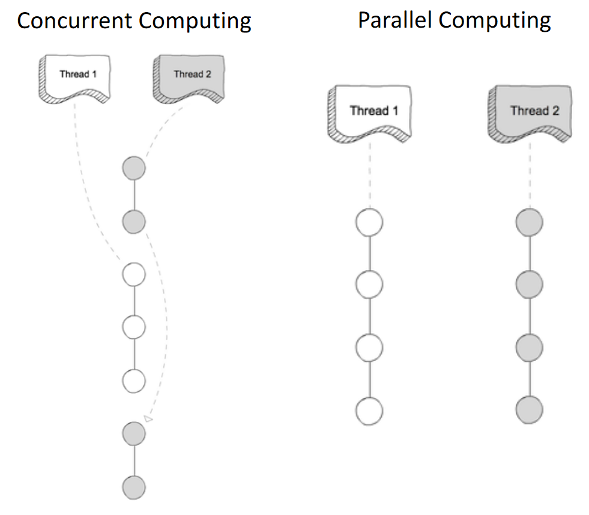
任务并行和数据并行
- 任务并行：将不同的任务（或功能）分配给不同的处理单元，每个处理单元执行不同的操作。
- 数据并行：将相同的操作应用于不同的数据子集，每个处理单元执行相同的操作，但处理的数据不同。
老师有 100 个学生的试卷要改，4 个助教来帮忙改卷： 数据并行：4 个助教每个人改 25 份试卷。 任务并行：助教A负责批改选择题，助教B负责批改填空题，助教C负责批改问答题...
在各个核独立工作时，并行程序其实和串行程序差不多，但是核之间往往多需要协调工作，这就会很复杂，协调过程主要分为一下三种:
- 通信
- 负载均衡（每个核的工作都差不多）
- 同步
并行系统
主要关注的是共享内存系统和分布式内存系统。
- 分布式： MPI
- 共享：Pthread、OpenMP
第二章 并行硬件和软件
重点：层次化存储、Cache、SIMD、MIMD、加速比效率阿姆达尔定理扩展性。
冯诺依曼架构困境
指处理器速度和内存访问速度之间差距越来越大（CPU和主存分离），导致 CPU 大量时间在等待数据，而不是计算。（数据要到 CPU 内的寄存器，CPU 才能算）
工厂 = CPU，负责加工产品 仓库 = 内存，存放所有原材料 运送通道 = 总线，连接工厂和仓库 如果工厂速度过快就会导致交通阻塞，工厂也时不时空闲下来。
为了解决这个问题，引入了 三种改进措施：Cache、虚拟内存、低层次并行。
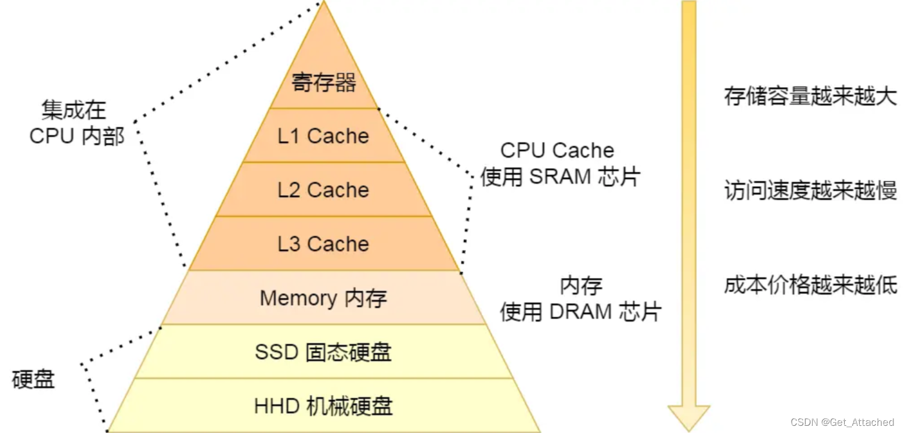
进程、多任务及线程
- 进程：是应用程序运行时的一个实例，是系统资源分配的基本单位。
- 线程：是进程中的一个执行单元，是 CPU 调度的基本单位。
- 多任务：是指操作系统可以让多个任务（通常是进程）在“看起来”同时执行。
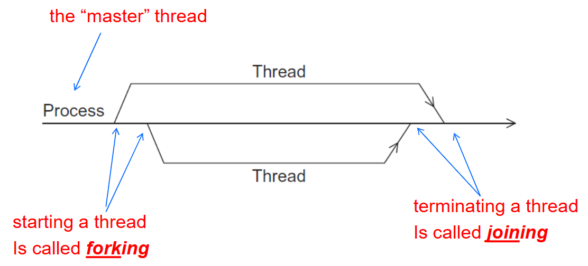
Cache
在工厂里建了一个小型原料间，放常用的原材料，这个小仓库就是：Cache
通常一次向内存读取一个 Cache Line (大概 32/64 个字节)，不会 4 个 4 个字节的读。
因为 Coder 不能显式的控制 Cache Line 放到 Cache 内，所以需要利用 时间局部性 和 空间局部性。
- 时间局部性：如果程序刚刚访问了某个数据，未来很可能再次访问它。
- 空间局部性：如果程序访问了某个内存位置，它很可能接下来会访问附近的位置。
用以下的代码举个例子：
float z[1000];
...
sum = 0.0;
for (i = 0; i < 1000; i++)
sum += z[i];- 时间局部性
- 在这段代码中，
sum每次都被读取和更新，是一个被频繁反复使用的变量。
- 所以 CPU 会把
sum保留在寄存器或 Cache 里，这样每次sum += z[i]都不需要重新从内存中加载 sum。
- 空间局部性
z是一个长度为 1000 的数组，连续存储在内存中。- 当访问
z[0]时，CPU 会预取整个一块 Cache Line 到Cache中，也就可能包含z[1]、z[2]……等后续元素。 - 然后
z[1]、z[2]、z[3]…… 逐个访问，就全部命中 Cache。
Cache 修改（感觉不太重要，看看）
当 CPU 向 Cache 写数据时，Cache 中的值与主存中的值存在不一致。有两种方式解决：写直达、写回。
- 写直达：当 CPU 修改 Cache 数据之后，会立刻把这个数据的整个 Cache Line 写入主存中。
- 写回：当 CPU 修改 Cache 数据之后，在 Cache 标记这个 Cache Line 是脏的，当这个 Cache Line 换出 Cache 之后再写进主存。
Cache 映射（感觉不太重要，看看）
分为 全相联、直接相联、n路组相联映射。
- 全相联：主存中任意 Cache Line 可以映射到 Cache 的任意位置。
- 直接相联：主存中每个 Cache Line 只能映射到 Cache 的一个固定位置。
- n路组相联映射：把 Cache 分成若干组（一组可容纳 n 个 Cache Line），每个 Cache Line 只能映射到某一组内的任一位置。（即最多有 n 个位置可选）
虚拟内存我觉得都不会考，这里就不写了。
指令级并行
指在一个处理器核心内部，同时或重叠执行多条指令，以提升性能。
可以有两种方法实现：流水线、多发射。
流水线
把指令的执行过程划分为若干阶段，多个指令在不同阶段同时进行，就像工厂流水线那样重叠执行。
- 提升吞吐量（每个周期输出一条指令结果）
以下例子：执行 1000 次加法，一次加法需要 7ns，原本需要 7000ns，但是流水线后只需要 1006ns。
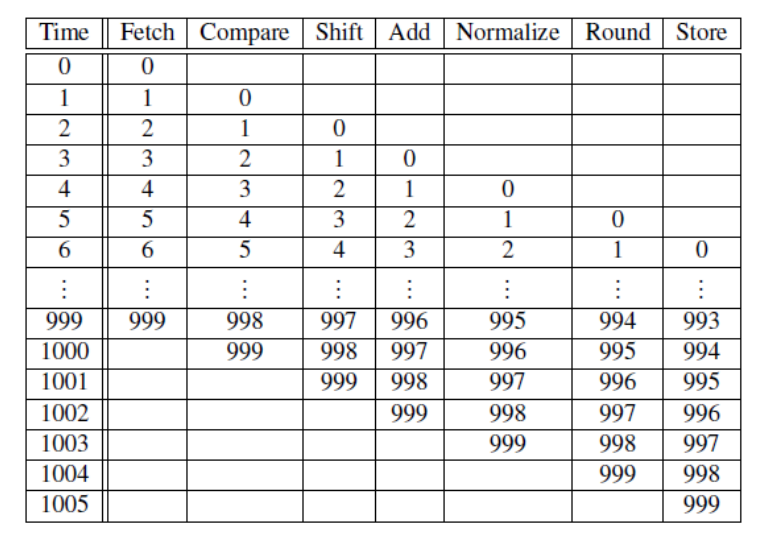
多发射
CPU 内部有多个执行单元，可以在同一个时钟周期内并行发射/执行多条指令。
例如还是上面的例子（有两个加法器）：执行 1000 次加法，第一个加法器执行下标单数加法，第二个加法器执行下标双数加法。
- 静态多发射：多条指令是否可以同时发射由编译器在编译时决定，CPU 在运行时按固定顺序执行。
- 动态多发射：多条指令是否可以同时发射由CPU 硬件在运行时动态决定。
并行硬件
主要使用 Flynn分类法 对计算机体系结构进行分类，按照它能够同时管理的指令流数目和数据流数目进行分类。
冯诺伊曼架构是 单指令单数据流(SISD) 系统，属于串行系统。
只要系统同时执行多个数据流或多个指令流，都属于并行系统。
SIMD系统
SIMD 系统通过对多个数据执行相同的指令从而实现在多个数据流上的操作。
可以抽象的认为有 一个控制单元 和 多个ALU。一条指令从控制单元广播到多个ALU。
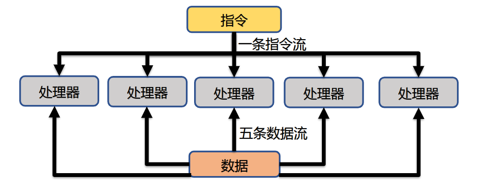
控制单元广播 一条指令，所有 ALU 同步接收这条指令，每个 ALU 处理 不同的数据元素。
所有 ALU 需要执行相同的指令，要么一起工作，要么一起空闲，实际上大大降低 SIMD 系统的整体性能：
- 因为如果指令分支复杂、数据路径多样，SIMD效率下降。
SIMD 适合数据并行，并且在处理大型数据并行问题十分有用。
- 像 GPU 都是使用 SIMD 并行，但是 GPU 不是 SIMD 系统，尽管在一个核上的 ALU 使用了 SIMD，但是 GPU 有很多核，每个核能独立的执行指令流。
- SIMD 计算机可以分成 向量计算机 和 阵列计算机。
Cuda 是特殊的 SIMD 并行，因为一个线程束 warp 有 32 个线程一起执行。
MIMD系统
MIMD 系统支持多个指令流在多个数据流上进行操作，通常包括一组完全独立的处理单元。
- 目前使用的最多。
- 不同于 SIMD 系统（同步），是异步的。
MIMD 系统有两种主要的类型，分别是 共享内存系统 和 分布式内存系统。
共享内存系统主要用于核数比较少的情况，因为使用总线通信，核数一多总线压力就很大。（主要是线程）
分布式内存系统主要用于需要核数比较多的情况。（主要是进程）
共享内存系统
多个处理单元（核）共享同一块主内存空间，可以直接访问和通信。
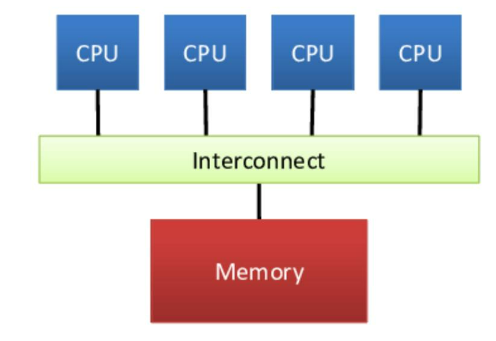
共享内存系统可以分成 一致存储访问系统(UMA) 和 非一致存储访问系统(NUMA)。
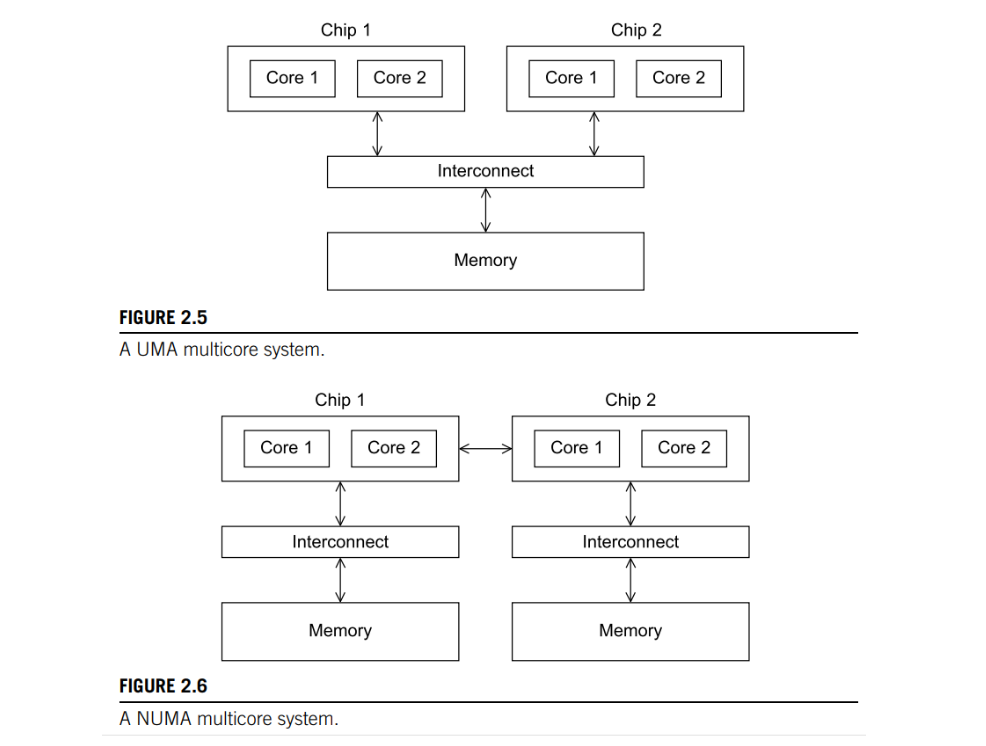
- UMA：所有处理器访问任何一块内存的速度和带宽都一样。
- NUMA：每个处理器有自己“更近”的本地内存，访问速度较快，访问其他处理器的内存则较慢。
分布式内存系统
每个处理单元有自己的私有内存，彼此之间不能直接访问对方内存，只能通过显式通信传递数据。
最广泛使用分布式内存系统称为集群。
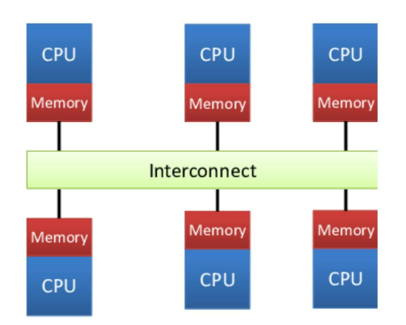
互联网络（Interconnect）(原来这部分是不用考的哭)
- 在共享内存中，最常使用的互联网络是 总线 和 交叉开关矩阵。
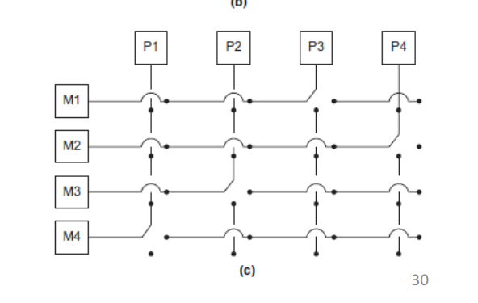
- 在分布式内存中，互联网络分成 直接互联 和 间接互联。
直接互联：每个交换器都要与处理器连接。
以下左边是环，而右边是二维环面网络。
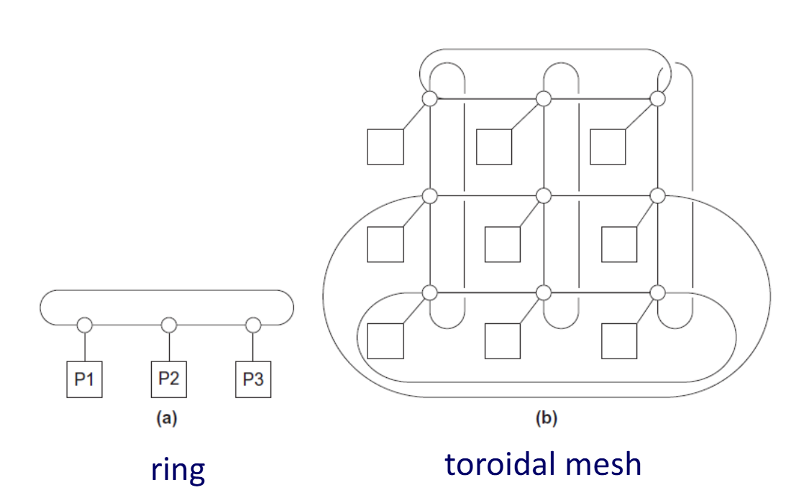
以下是全连接：
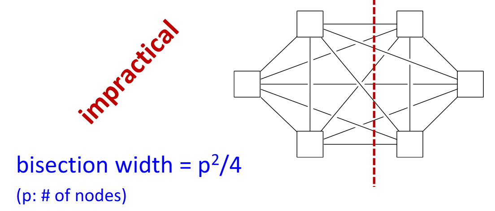
以下是超立方：
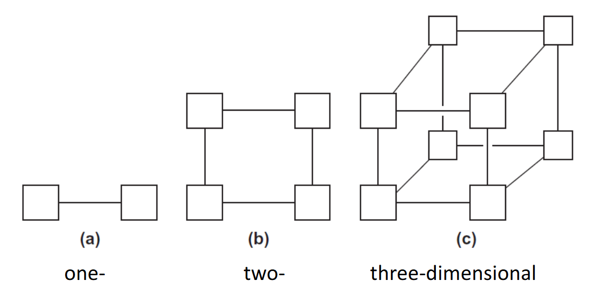
需要知道等分宽度（就是去掉最少的链路数从而将节点分成两部分）。
- 如果一个正方形的二维环面网络有 p 个节点，则 等分宽度为 2 * 根号p（根号p 为中间行数，乘 2 是因为还有环绕）
- 一个全相联网络有 p 个节点，则 等分宽度为 (p/2) * (p/2)，因为一边有 p/2 个节点，每边的每一个节点都需要去除与另外一边的 p/2 条链路。
- 超立方体的等分宽度就是前一维的节点数，看图也可以看出来。
间接互联：交换器不一定和处理器直接连接。
有 交叉开关矩阵（下面） 和 Omega网络（下下面）。
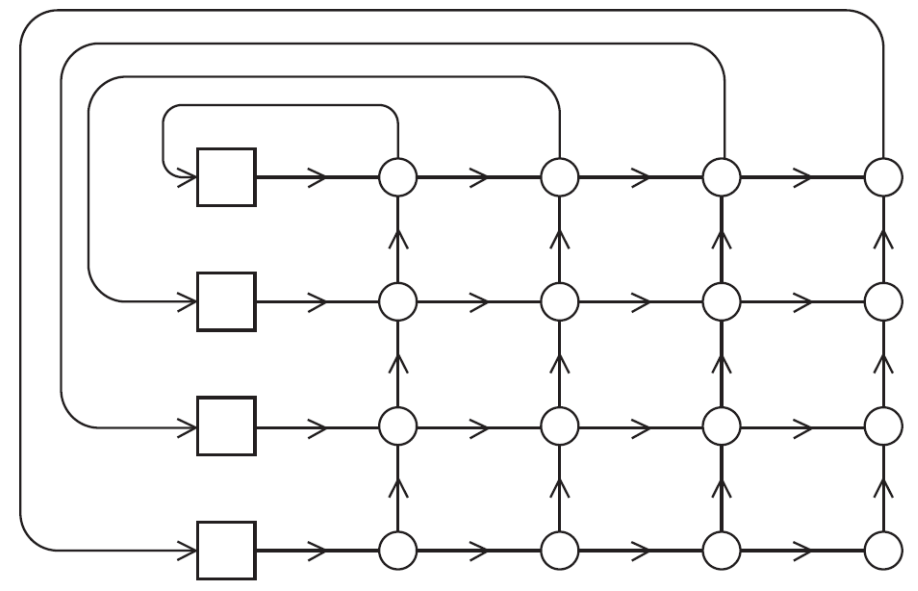
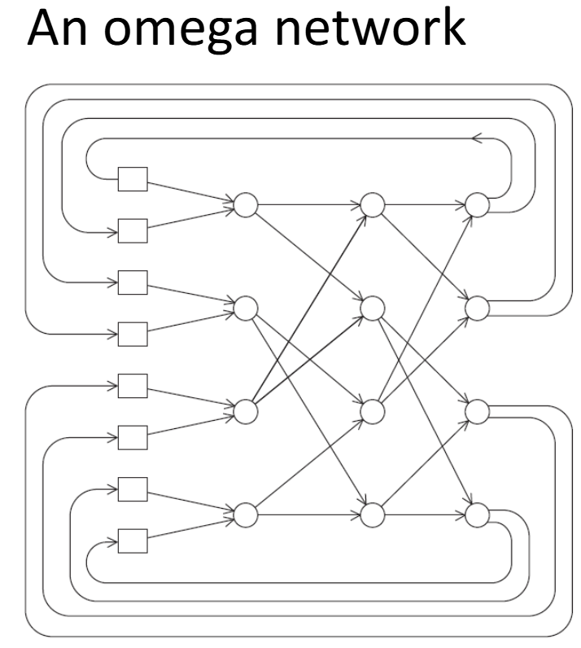
- P * P大小的交叉开关矩阵的等分宽度是P。
- Omega 网络的等分宽度是p/2。
Cache 一致性（我记得老师说看看就行）
在多核系统中，各个核的 Cache 存储相同变量的副本，当一个处理器更新当前 Cache 中该变量副本时候，其他处理器应该知道该变量已更新并且也在自己的副本中更新，这个就是 Cache 一致性问题。
举例：CPU1 修改了某个变量的副本，但 CPU2 的 Cache 里还有旧的副本 → 数据不一致。
例如在共享内存系统中有两个核，x是共享变量，y0是核0私有的，y1和z1是核1私有的。
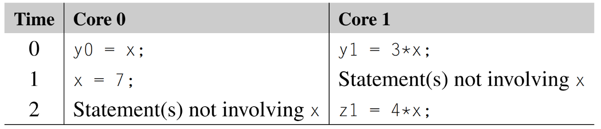
实际上，不可预测 z1 究竟是 8 还是 28。
这种不可预测的行为与 写直达 还是 写回 无关。
有两个方法保证 Cache 的一致性： 监听 Cache 一致性协议 和 基于目录的 Cache 一致性协议。
监听 Cache 一致性协议
想法来自于 总线：每个 Cache 监听共享的总线，监控其他处理器的读写操作，来 更新自己 Cache 中的数据副本。
CPU1 写了变量 X，会在总线上广播 "我写了 X" CPU2 和 CPU3 听到后，就知道自己缓存的 X 无效了，要重新加载
瓶颈在于总线的带宽，很难扩展到大规模上使用。
基于目录的 Cache 一致性协议
系统中设置一个目录，记录每个 Cache Line 当前被哪些处理器缓存。当某处理器需要写一个变量的值时，可以查询目录，并且将含有该变量的 Cache Line 置为非法。
CPU1 想写变量 X，先告诉目录：“我要写 X” 目录查到 X 还被 CPU2 缓存着，就通知 CPU2 作废它的副本 然后 CPU1 就可以安全写入
伪共享（必考）
主要发生在共享内存情况下。
伪共享发生在多个核心访问同一个 Cache Line 中的不同变量时，即使它们操作的变量不相同，也会因为共用同一 Cache Line 而频繁触发缓存一致性机制，导致性能急剧下降。
例如：
/* Private variables */
int i, j, iter_count;
/* Shared variables initialized by one core */
int m = 8, n = 100, core_count = 2;
double y[8]; // 假设 m = 8
iter_count = m / core_count; // 每个核心处理 4 个元素
/* Core 0 does this */
for (i = 0; i < iter_count; i++) {
for (j = 0; j < n; j++) {
y[i] += f(i, j);
}
}
/* Core 1 does this */
for (i = iter_count; i < 2 * iter_count; i++) {
for (j = 0; j < n; j++) {
y[i] += f(i, j);
}
}虽然两个核心处理的是数组 y 的不同部分，看起来互不干涉，但由于：
y[0] ~ y[7]在内存中是连续的，恰好占满一个 cache line（64字节）。
这意味着两个核心同时修改落在同一个 cache line 的不同位置的数据，系统为了保持缓存一致性，频繁触发 缓存同步（如失效、更新），导致性能急剧下降。
SPMD
SPMD 是指多个处理器运行同一个程序，但能够通过条件分支处理各自独立的数据子集。
不是在每个核上运行不同的程序，处理不同的数据流。 MIMD 是在每个核上运行不同的程序，处理不同的数据流，这是 SPMD 和 MIMD 的区别，但是MIMD执行一样的程序就变成 SPMD 了。 SIMD 和 SPMD 的区别：SIMD通常跑在单核，而SPMD跑在多核；SIMD是指令级别并行模型，而SPMD是程序级别并行，SIMD需要所有ALU跑同一条指令，而SPMD不需要同步，每个核异步的执行。
SPMD 可以实现 任务并行 和 数据并行：
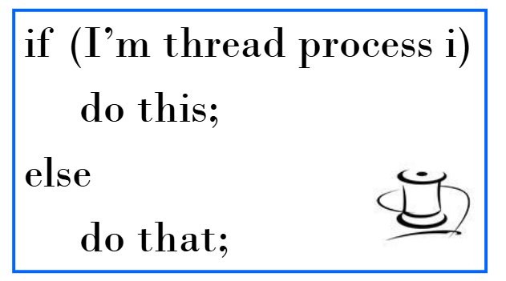
通信（必考）
这个部分是 共享内存 和 分布式内存最大的差异。
共享内存
共享内存通过访问共享变量来实现隐式的通信。
- 动态线程：有一个主线程，当请求到达时就派生一个工作线程，工作完之后就合并。
- 静态线程：类似线程池。一次性创建完所有线程。
不确定性（必考）
在任何一个 MIMD 系统中，处理器异步执行很容易引发不确定性。
不确定性是给定相同的输入，但是输出可能会发生变化。
例如：两个线程都执行下列的代码。
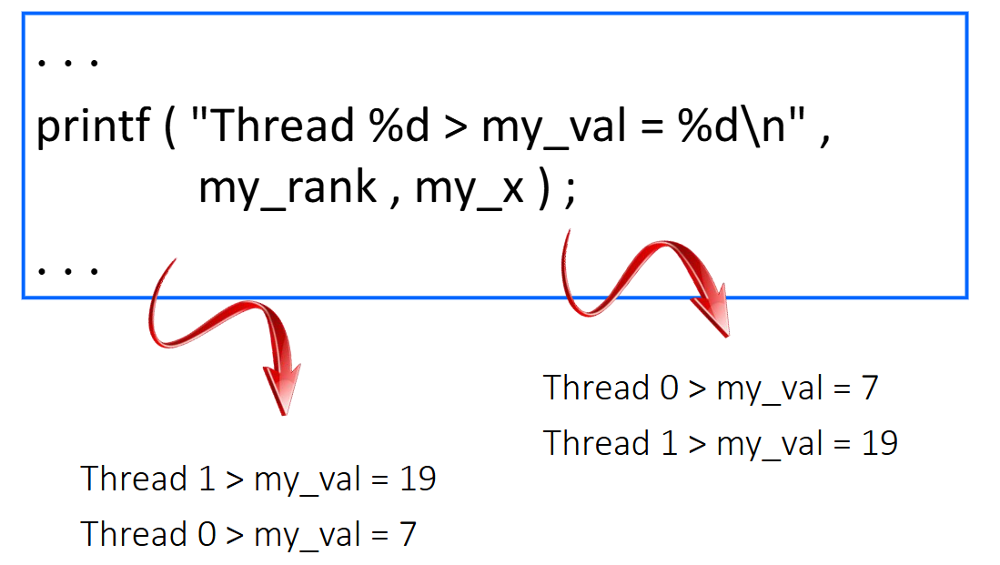
例如：大二操作系统做的实验，实际上 += 是进行了三条指令（不是原子的）。
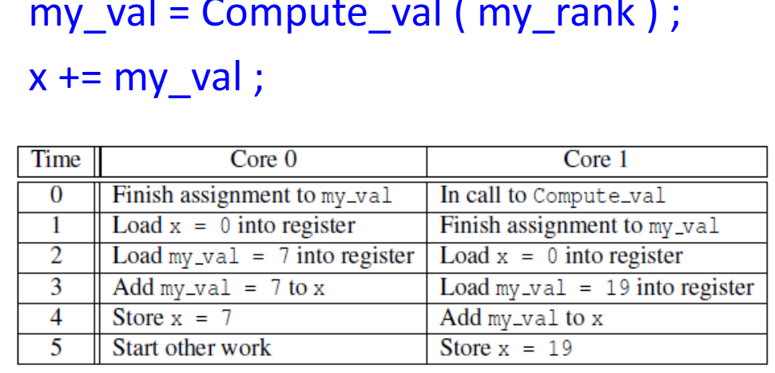
这里引出了操作系统的 竞争条件 和 临界区。
- 竞争条件：多个进程或者线程同时访问一个共享数据，并且该共享数据的值与进程访问顺序有关。
- 临界区：一次只能被一个线程或者进程执行的代码块（通常需要访问共享变量），需要线程或者进程互斥的访问该代码块。
实现互斥的方法有：互斥锁、忙等待、信号量。
值得一提的是，使用互斥锁会增加代码的串行化，所以临界区需要尽可能的短。
线程安全性
当一个代码块被多个线程运行并且结果正确，称为线程安全的。
需要关注函数的静态变量，例如多个线程调用一个函数，但是函数的静态变量是共享的。
例如 strtok 切割字符串函数：
char strA[] = "a b c";
char *saveptrA;
char *tokenA1 = strtok_r(strA, " ", &saveptrA); // "a"
char *tokenA2 = strtok_r(NULL, " ", &saveptrA); // "2"
char *tokenA3 = strtok_r(NULL, " ", &saveptrA); // "2"
char strB[] = "1 2 3";
char *saveptrB;
char *tokenB1 = strtok_r(strB, " ", &saveptrB); // "1"
char *tokenB2 = strtok_r(NULL, " ", &saveptrB); // "NULL"
char *tokenB3 = strtok_r(NULL, " ", &saveptrB); // "NULL"分布式内存
使用消息传递方法进行通信。
消息传递的 API 通常提供两个最基本的操作：
send(destination, data)：将本地数据发送给指定的目的节点。recv(source)：从指定的源节点接收数据。
性能评估（必考）
加速比
公式如下：
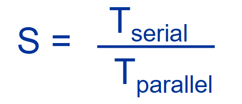
线性加速比：S = P（核数）。
效率
公式如下：
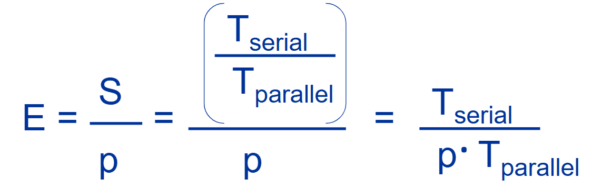
表示的是希望 S 接近线性加速比的程度(所以除 P )。
一个相同规模的并行程序加速比和效率：
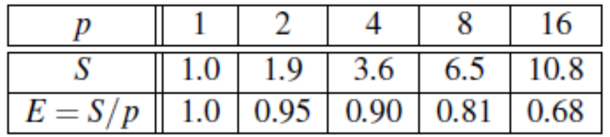
- 加速比 S 随处理器数量增加而上升：说明并行带来了性能提升。但并不是线性提升（即不是 $S = p$），存在通信开销。
- 效率 E = S/p 随 p 增加而下降：说明核越多的情况下，并行开销（通信/同步）增加了。
实际上 $T_并=T_串/p + T_{开销}$。
不同规模的并行程序加速比和效率：
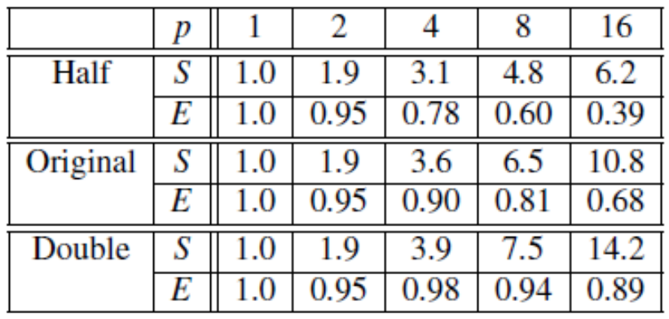
- 加速比 S 随问题规模变大而提高：因为计算量多了，通信开销比例变小，所以能更好地“掩盖”并行开销。
- 加速比 S 随核数变大而提高：跟上面的例子一样。
- 效率 E 随问题规模变大而提高：在核数相同的情况下，S 作为 E 的分子，S 变大 E 也变大。
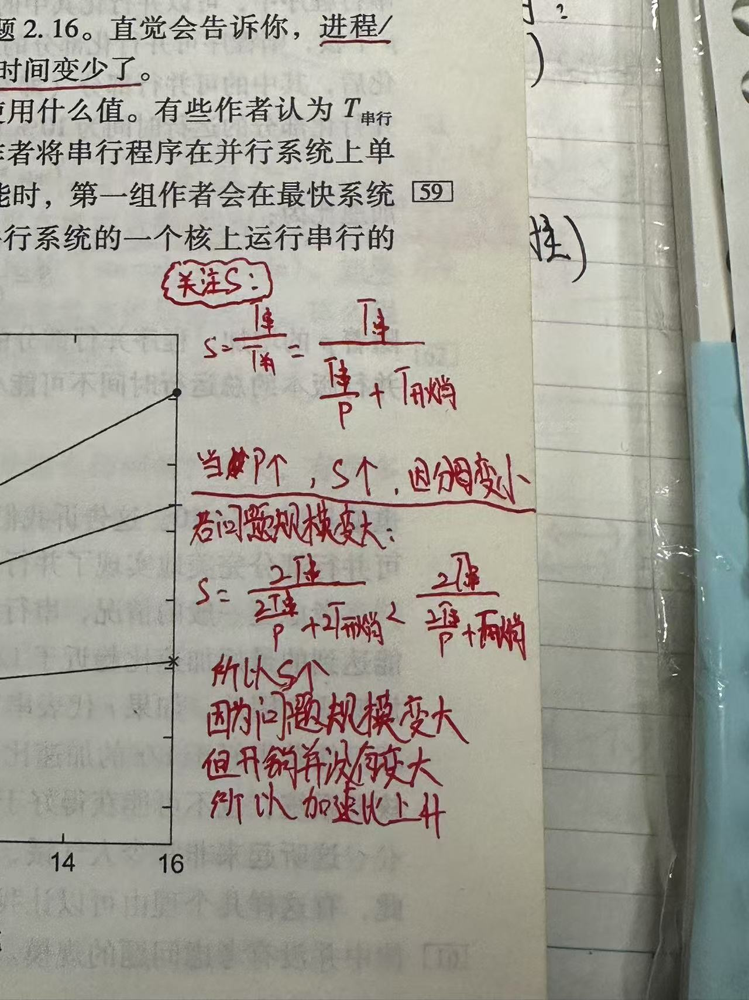
阿姆达尔定律
在一个程序中，如果某部分代码是串行的（不可并行），那么无论使用多少个核心，这个程序并行的加速比都是有上限的。
假设一个程序中有：
- 串行部分 $f = 0.1$（10% 不能并行）
- 并行部分 $1 - f = 0.9$
当 $p → ∞$ 时，阿姆达尔定律变为表明，最高的加速比只有 10。
可扩展性（必考）
可扩展性描述的是一个并行程序在增加处理器数量时，性能能否持续提升的能力。
分为弱扩展性和强扩展性。
- 强扩展性：固定问题规模，增加核数 P，效率维持不变。（只有当没有任何通信开销才有可能）
- 弱扩展性：增加核数 P 的同时，需要以相同规模增加问题的规模才能效率维持不变。
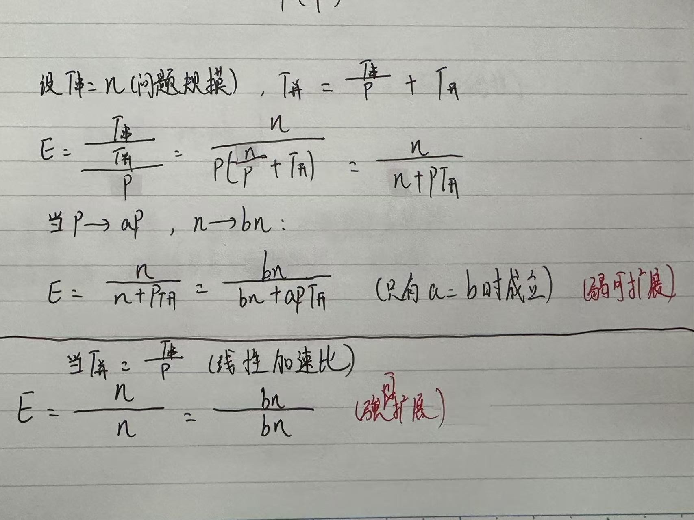
第三章 MPI进行分布式内存编程
重点：通信（点对点、集合），发送和接收信息的语义（是不是阻塞）
MPI 是分布式内存的，角色主要是进程。
实际上 MPI 是一个函数库。
编译与执行
使用 mpicc 进行编译。例如：
mpicc -o hello hello.c可以使用 mpiexec 进行执行：
mpiexec -n 4 ./hello以下有个示例代码：
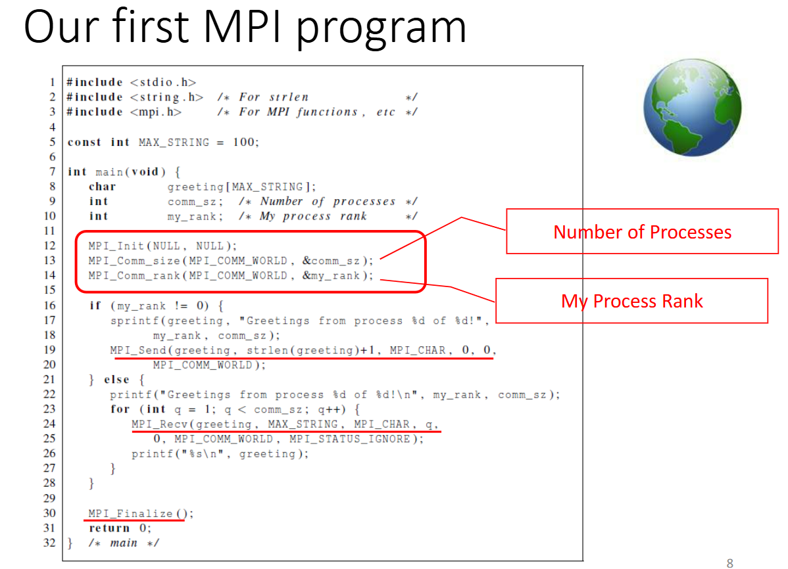
MPI函数
MPI_Init和MPI_Finalize
- MPI_Init：必须在所有其他 MPI 函数调用之前执行。隐含着将所有线程同步的意思。
int MPI_Init(int *argc, char ***argv);- MPI_Finalize：关闭 MPI 环境，清理资源。
int MPI_Finalize(void);...
#include<mpi.h>
...
int main(int argc, char* argv[]){
MPI_init(&argc, &argv);
...
MPI_finalize();
...
return 0;
}通信子、MPI_Comm_size、MPI_Comm_rank
- 通信子：指的是一组互相发送消息的进程集合。(由
MPI_Init定义用户启动的所有进程是一个通信子)
- MPI_Comm_size：获取通信子中总共有多少个进程。
int MPI_Comm_size(MPI_Comm comm, int *size);- MPI_Comm_rank：
int MPI_Comm_rank(MPI_Comm comm, int *rank);int size;c
MPI_Comm_size(MPI_COMM_WORLD, &size);
int rank;
MPI_Comm_rank(MPI_COMM_WORLD, &rank);MPI_Send(重点)
int MPI_Send(
void *buf, // 发送缓冲区指针
int count, // 要发送的数据项个数
MPI_Datatype datatype, // 数据类型
int dest, // 目标进程的 rank
int tag, // 消息标签
MPI_Comm comm // 通信子
);| 参数 | 含义 |
|---|---|
buf | 要发送的数据的起始地址（指针） |
count | 要发送的数据项个数（不是字节数） |
datatype | MPI 数据类型，如 MPI_INT, MPI_FLOAT, MPI_CHAR 等 |
dest | 目标进程的 rank |
tag | 消息标签，用于区分不同消息 |
comm | 通信子，一般为 MPI_COMM_WORLD |
- tag：例如需要发送很多浮点数，但是一半用来做加法，一半用来做减法，可以透过
tag告诉接收方哪些做加法，哪些做减法。
MPI_Recv(重点)
int MPI_Recv(
void *buf, // 接收缓冲区指针
int count, // 最多接收的数据项个数
MPI_Datatype datatype,// 数据类型
int source, // 消息来源进程的 rank
int tag, // 消息标签
MPI_Comm comm, // 通信子
MPI_Status *status // 接收状态
);| 参数 | 含义 |
|---|---|
buf | 接收数据的缓冲区指针 |
count | 最多接收的数据项数量（不是字节数） |
datatype | 数据类型，如 MPI_INT、MPI_FLOAT |
source | 消息来源的进程号，可以用 MPI_ANY_SOURCE 匹配任意 |
tag | 消息标签，可以用 MPI_ANY_TAG 匹配任意 |
comm | 通信子，一般用 MPI_COMM_WORLD |
status | 返回消息状态（如发送者、实际接收数量），也可以用 MPI_STATUS_IGNORE 忽略 |
消息匹配
MPI 会根据以下三项来判断一个 MPI_Recv 是否能与某个 MPI_Send 匹配：
- source = 发送方进程的 rank
- recv_tag = send_tag
- recv_comm = send_comm
除此之外，recv_type = send_type，同时 recv_buff_sz >= send_buff_sz，就可以成功接收信息。
MPI 提供了两个通配符来简化匹配：MPI_ANY_SOURCE、MPI_ANY_TAG。
这个通配符只能在接收方使用！！
recv status_p 参数
MPI_Status 是一个结构体，在标准实现中包括至少以下三个成员：
| 字段名 | 说明 |
|---|---|
MPI_SOURCE | 实际发送消息的进程 rank |
MPI_TAG | 实际接收消息的 tag |
MPI_ERROR | 错误码（通常用不到，一般检查返回值即可） |
MPI_Send 和 MPI_Recv 的语义(是不是阻塞)（重点）
- MPI_Recv：一定是阻塞的。
- 如果消息未到达，
Recv会一直等待，除非出错或被取消（进程悬挂）。
- MPI_Send：看发送的消息大小有没有超过阈值。
- 如果消息很小，MPI 实现可能会将其复制到内部缓冲区并立即返回。
- 如果消息较大，且对方还没准备好接收，则会阻塞。
MPI 要求信息是不可超越的，即同一个进程连续发送的几条信息，必须按顺序到。
不同进程没有这个限制。
实现梯形积分
串行
用 梯形法 将区间 $[a,b]$ 划分为 $n$ 个梯形子区间，每个宽度为 $h = \frac{b - a}{n}$，
double trapezoidal(double a, double b, int n) {
double h = (b - a) / n;
double sum = (f(a) + f(b)) / 2.0;
for (int i = 1; i < n; i++) {
double x = a + i * h;
sum += f(x);
}
return h * sum;
}MPI 并行
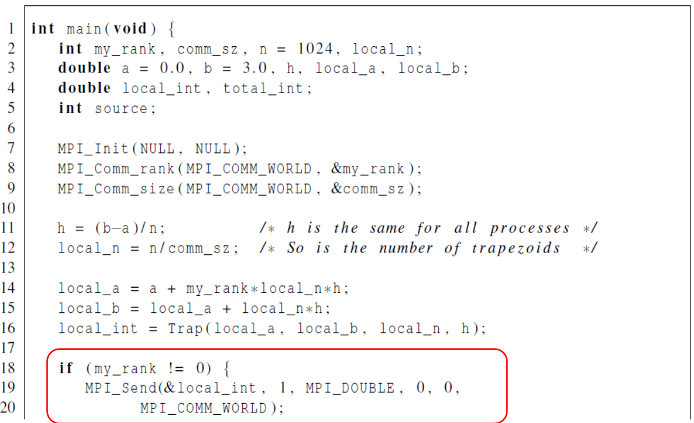
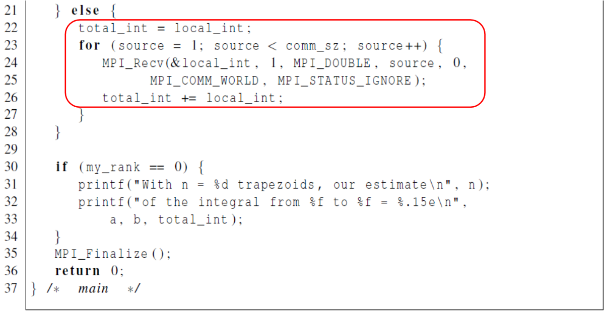
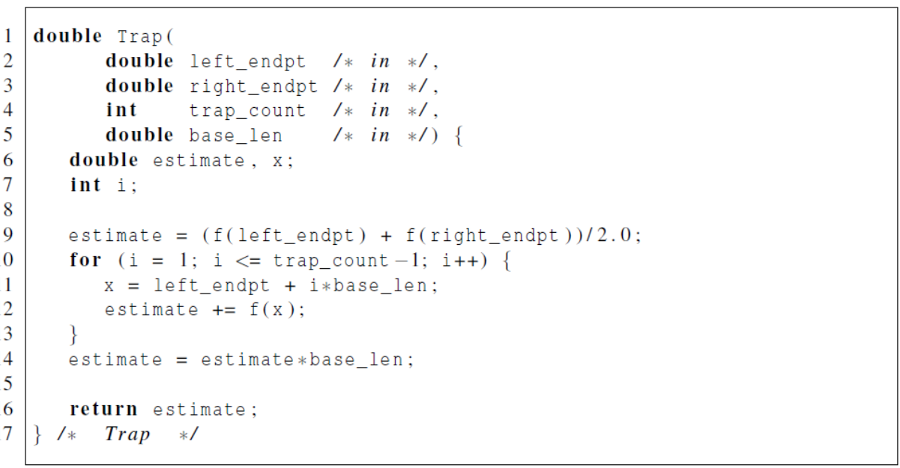
IO处理
- 输出：所有的进程都可以访问 stdout，输出的顺序是不可预测的。
所以通常把所有输出内容发给 0 号进程。
- 输入：只有 0 号进程可以访问 stdin。
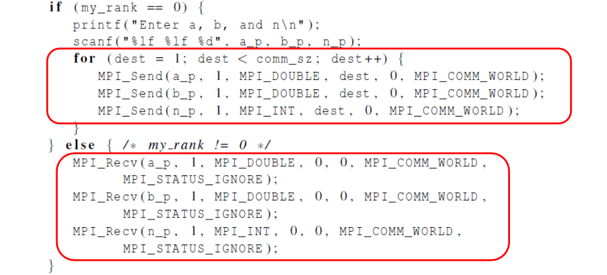
集合通信（重点）
涉及通信子中所有进程的通信函数称为集合通信，MPI_Send 和 MPI_Recv 是点对点通信。
树形结构通信
如果像刚刚算梯形积分一样，所有线程都把自己结果发给 0 号线程来统计，如果 comm_sz=1024，那么需要 1023 次接收和计算工作，但是如果用树形结构，只需要 log(2)(1024)=10次接收和计算。
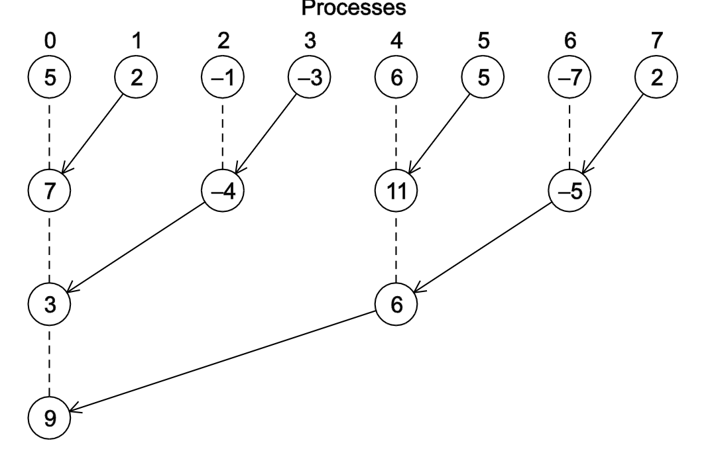
MPI_Reduce
MPI_Reduce 是 MPI 中的一个全局归约操作函数，用于将多个进程中的数据按照指定的归约操作（如求和、最大值）进行聚合，并将结果返回到一个指定的根进程。
int MPI_Reduce(
void *input_data_p, // 输入数据指针（每个进程的数据）
void *output_data_p, // 输出数据指针（只在 root 上有效）
int count, // 数据元素个数
MPI_Datatype datatype, // 数据类型，如 MPI_INT, MPI_DOUBLE
MPI_Op operator, // 操作类型，如 MPI_SUM, MPI_MAX
int dest_process, // 接收归约结果的根进程编号
MPI_Comm comm // 通信器，通常为 MPI_COMM_WORLD
);单个变量归约：
int value = rank + 1; // 进程0存1，进程1存2，进程2存3，进程3存4
int result;
MPI_Reduce(&value, &result, 1, MPI_INT, MPI_SUM, 0, MPI_COMM_WORLD);
if (rank == 0) {
printf("Sum is %d\n", result); // 输出10
}多个变量归约：
double local_x[N], sum[N];
MPI_Reduce(local_x, sum, N, MPI_DOUBLE, MPI_SUM, 0, MPI_COMM_WORLD);集合通信与点对点通信
- 通信子中的所有进程都必须调用相同的集合函数。（不能够将 MPI_Reduce 和 MPI_Recv 相匹配）
- 每个进程传递给集合通信函数的参数必须是一致的。（没理由传根进程编号，一个传1，一个传0）
- 参数
output_data_p只在根进程上使用，但是其他进程也必须要传这个参数。
- 点对点通信通过
tag和 通信子来匹配，集合通信只通过通信子和调用顺序进行匹配。
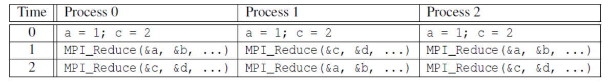
- 第一次 Reduce 实际上是
a (P0)+c (P1)+a (P2)=1 + 2 + 1 = 4→ 存入b - 第二次 Reduce 是
c (P0)+a (P1)+c (P2)=2 + 1 + 2 = 5→ 存入d
不管这些值规约的变量名是不是 a 或 c，关键是“顺序”匹配了谁和谁一起归约。
MPI_Reduce(&x, &x, 1, ...) 这种调用方式是非法的。
MPI_Allreduce
前面的 MPI_Reduce 只有一个进程获得归约（全局总和）的结果，但是希望所有进程可以获得归约后的结果，引入了 MPI_Allreduce。
int MPI_Allreduce(
void *input_data_p, // 输入数据指针（每个进程的数据）
void *output_data_p, // 输出数据指针（只在 root 上有效）
int count, // 数据元素个数
MPI_Datatype datatype, // 数据类型，如 MPI_INT, MPI_DOUBLE
MPI_Op operator, // 操作类型，如 MPI_SUM, MPI_MAX
MPI_Comm comm // 通信器，通常为 MPI_COMM_WORLD
);参数和 MPI_Reduce 是差不多的，只不过没有了根进程编号。
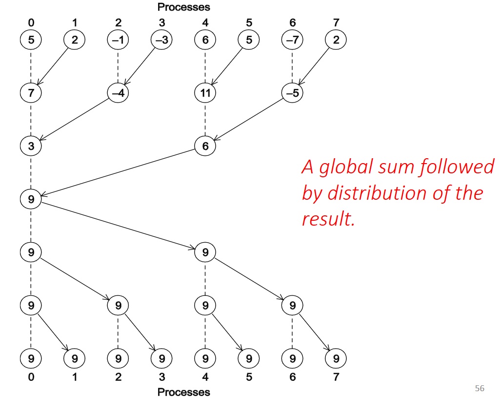
广播
就是把一开始的树形结构通信反过来，将属于根进程的数据发送给通信子中的所有的进程，这样的集合通信叫做广播。
int MPI_Bcast(
void *data_p, // 数据指针，in/out（发送或接收）
int count, // 数据元素个数
MPI_Datatype datatype, // 数据类型（如 MPI_INT, MPI_DOUBLE）
int source_proc, // 发起广播的进程编号（root）
MPI_Comm comm // 通信器，通常是 MPI_COMM_WORLD
);data_p在源进程是输入参数，在其他进程是一个输出参数。
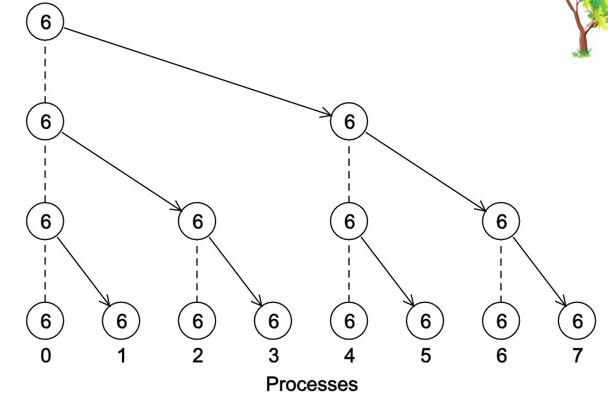
广播一个数组：
int data[4];
if (rank == 0) {
data[0] = 10; data[1] = 20; data[2] = 30; data[3] = 40;
}
MPI_Bcast(data, 4, MPI_INT, 0, MPI_COMM_WORLD);
printf("Rank %d: data[2] = %d\n", rank, data[2]);数据分发
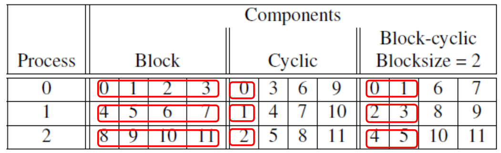
分别是 块划分、循环划分、块-循环划分。
MPI_Scatter(散射)
MPI_Scatter 将 root 进程中的数据使用块划分分成若干份，并把每一份分别发给不同的进程。它常用于任务初始化阶段的数据划分。
int MPI_Scatter(
void *send_buf_p, // 根进程提供的完整数据数组
int send_count, // 每个进程应接收的元素个数
MPI_Datatype send_type, // 数据类型（发送方）
void *recv_buf_p, // 各进程接收数据的缓冲区
int recv_count, // 每个进程接收的元素个数
MPI_Datatype recv_type, // 数据类型（接收方）
int src_proc, // 哪个进程作为“根”（负责发送）
MPI_Comm comm // 通信器（通常是 MPI_COMM_WORLD）
);- 记得
send_count需要等于recv_count，因为是发送到每个进程的数据量。 - 适合块划分法。
例子：
int sendbuf[4] = {10, 20, 30, 40}; // root
int recvbuf;
MPI_Scatter(sendbuf, 1, MPI_INT, &recvbuf, 1, MPI_INT, 0, MPI_COMM_WORLD);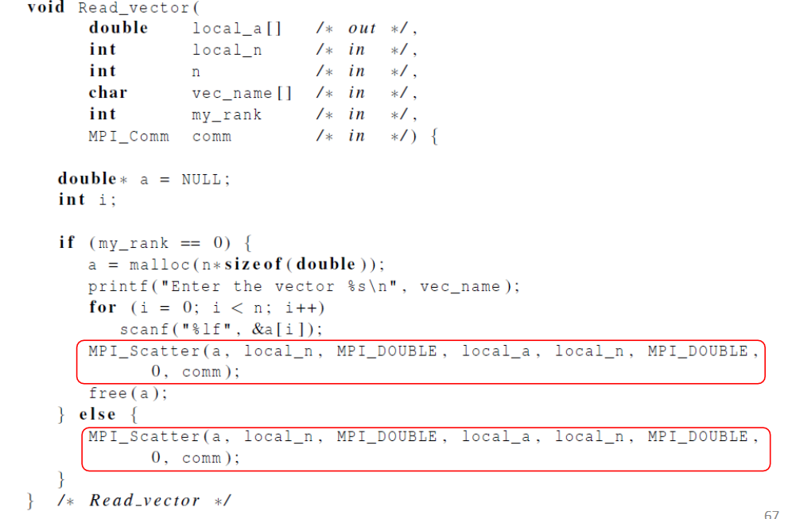
- 即使其他进程没有数组
a也可以。
MPI_Gather(聚集)
有点像跟 MPI_Scatter 反过来：MPI_Gather 用于将所有进程上的数据聚集到一个根进程的数组中，每个进程发送的数据块会按编号顺序拼接在根进程的接收缓冲区中。
int MPI_Gather(
void *send_buf_p, // 每个进程发送的数据地址
int send_count, // 每个进程发送元素的数量
MPI_Datatype send_type,// 发送数据类型
void *recv_buf_p, // 仅 root 进程使用：接收所有进程数据
int recv_count, // 每个进程接收多少元素（通常 = send_count）
MPI_Datatype recv_type,// 接收数据类型
int dest_proc, // 根进程编号（接收方）
MPI_Comm comm // 通信器，通常是 MPI_COMM_WORLD
);recv_count是从每个进程中接收到的数据数量。
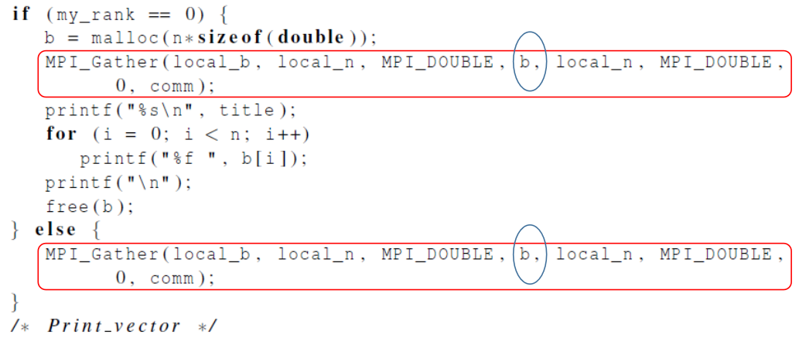
例子：有一个整型数组 data = [1, 2, 3, 4]，希望：
- 将它分发给 4 个进程（每个进程一个元素）
- 每个进程对收到的数值平方处理
- 然后收集回 root 进程，最终得到
[1, 4, 9, 16]
int data[4] = {1, 2, 3, 4}; // root 数据
int local; // 每个进程接收一个元素
int result[4]; // root 最终收集的结果
// 分发数据：每个进程接收一个整数
MPI_Scatter(data, 1, MPI_INT, &local, 1, MPI_INT, 0, MPI_COMM_WORLD);
// 本地处理：平方
local = local * local;
// 收集结果：root 收集所有进程处理后的结果
MPI_Gather(&local, 1, MPI_INT, result, 1, MPI_INT, 0, MPI_COMM_WORLD);MPI_Allgather(全局聚集)
MPI_Allgather 是一种集合通信操作，每个进程发送一段数据，同时接收来自所有进程的数据，最终每个进程都拥有完整结果。
可以看成是：
MPI_Allgather = MPI_Gather + MPI_Bcastint MPI_Allgather(
void *send_buf_p, // 每个进程要发送的数据地址（in）
int send_count, // 发送的元素数量
MPI_Datatype send_type, // 发送数据类型
void *recv_buf_p, // 每个进程接收所有进程数据的缓冲区（out）
int recv_count, // 每个进程应接收到的数据数量
MPI_Datatype recv_type, // 接收数据类型
MPI_Comm comm // 通信器
);- 对比
MPI_Gatter没有目的进程编号。
例子：一共有四个进程
int sendval = rank + 1;
int recvbuf[4];
MPI_Allgather(&sendval, 1, MPI_INT, recvbuf, 1, MPI_INT, MPI_COMM_WORLD);
// 每个进程 recvbuf = [1, 2, 3, 4]- 所有进程都要提供
recvbuf（和MPI_Gather不同） recvbuf大小应为：recvcount× 进程数。
MPI_Wtime
返回当前进程从 MPI 初始化以来的墙上时钟时间（wall time），单位是秒（double）。
double start, end;
start = MPI_Wtime();
// 执行一些操作
do_work();
end = MPI_Wtime();
printf("Elapsed time = %f seconds\n", end - start);MPI_Barrier
所有参与进程都到达该调用处后，才能继续执行。否则就阻塞等待。
int MPI_Barrier(MPI_Comm comm);例子：同步后测时间
MPI_Barrier(MPI_COMM_WORLD);
double start = MPI_Wtime();
// 每个进程执行同样的操作
do_parallel_work();
MPI_Barrier(MPI_COMM_WORLD);
double end = MPI_Wtime();
if (rank == 0) {
printf("Parallel section took %f seconds\n", end - start);
}MPI性能评估
运行时间
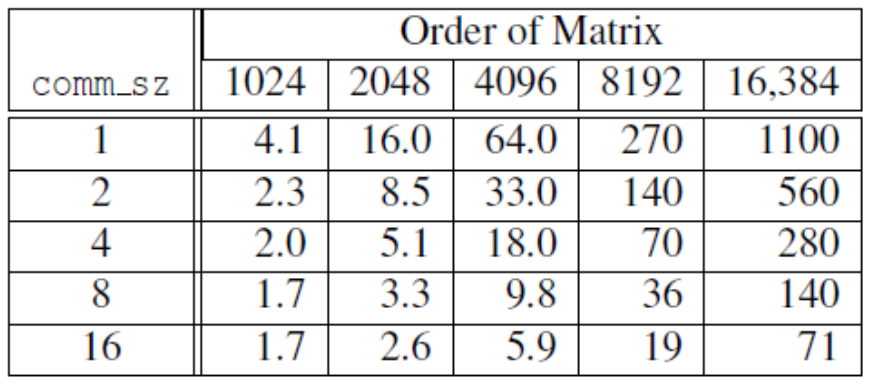
有以下时间公式：
可以看出，当矩阵规模不大时，但是 P 很大时，对 $T_并$ 起主导因素的是 $T_{allgatter}$。
加速比和效率
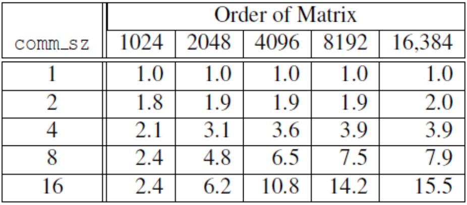
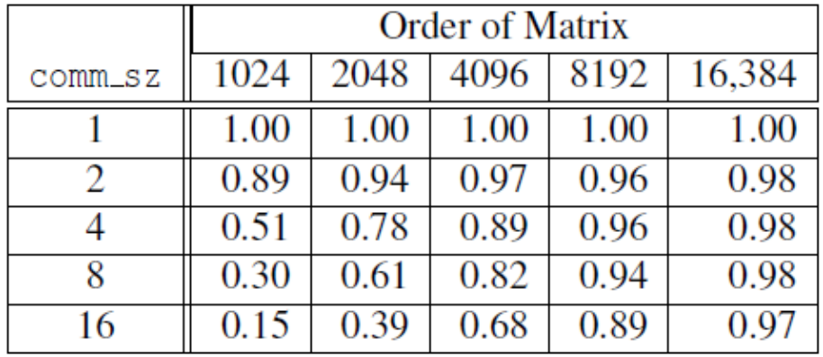
在 P 比较小，矩阵规模比较大的时候，加速比接近线性加速比。
在 P 比较大，矩阵规模比较小的时候，加速比很差。（$T_开$主导了$T_并$）
MPI程序的安全性
MPI_Ssend
MPI_Ssend 是 同步发送（Synchronous Send） 的点对点通信函数。百分百阻塞，所以性能不太好。
直到接收方真正开始接收，发送操作才会完成。
MPI_Send 是根据消息大小来决定是否阻塞的。
int MPI_Ssend(
void *msg_buf_p, // 要发送的消息缓冲区指针（数据地址）
int msg_size, // 要发送的数据个数
MPI_Datatype msg_type, // 数据类型，如 MPI_INT, MPI_DOUBLE
int dest, // 目标进程编号
int tag, // 消息标签（用于匹配）
MPI_Comm communicator // 通信器（如 MPI_COMM_WORLD）
);MPI_Sendrecv
造成线程不安全的最大因素在于多个进程同时发送消息，再同时接受消息。
例如：环形通信
- 所有进程都在
MPI_Send里等，没人先去Recv - 每个进程都等对方先接收 → 通信死锁
int MPI_Sendrecv(
void *send_buf_p, // 发送缓冲区指针（数据地址）
int send_buf_size, // 要发送的元素数量
MPI_Datatype send_buf_type, // 发送的数据类型
int dest, // ❗发送的目标进程编号
int send_tag, // 发送消息的标签
void *recv_buf_p, // 接收缓冲区指针（数据接收存放地址）
int recv_buf_size, // 要接收的元素数量
MPI_Datatype recv_buf_type, // 接收的数据类型
int source, // ❗接收的源进程编号
int recv_tag, // 接收消息的标签
MPI_Comm communicator, // 通信器
MPI_Status *status_p // 接收状态（可用 MPI_STATUS_IGNORE 忽略）
);- 会分别执行一次阻塞式消息发送和消息接收。
- dest 和 source 可以不同也可以相同。
例子：两个进程互相交换数据
int send_data = rank + 1;
int recv_data;
MPI_Sendrecv(&send_data, 1, MPI_INT, 1 - rank, 0,
&recv_data, 1, MPI_INT, 1 - rank, 0,
MPI_COMM_WORLD, MPI_STATUS_IGNORE);
printf("Process %d received %d from %d\n", rank, recv_data, 1 - rank);第四章 Pthreads 进行共享内存编程
重点：知道线程之间如何通信（访问共享变量），如何避免写写冲突，如何构造临界区，如何表达锁，
共享内存系统适合用于 同一部机器多个线程的情况（小规模），因为共享内存总线带宽是瓶颈。
和 MPI 一样，仍然是使用 SPMD。
Hello world 代码如下：
#include <stdio.h>
#include <pthread.h>
// 线程执行函数
void* say_hello(void* arg) {
int thread_id = *(int*)arg;
printf("Hello from thread %d!\n", thread_id);
return NULL;
}
int main() {
const int NUM_THREADS = 4;
pthread_t threads[NUM_THREADS];
int ids[NUM_THREADS];
// 创建线程
for (int i = 0; i < NUM_THREADS; i++) {
ids[i] = i;
pthread_create(&threads[i], NULL, say_hello, (void) &ids[i]);
}
// 等待所有线程结束
for (int i = 0; i < NUM_THREADS; i++) {
pthread_join(threads[i], NULL);
}
printf("All threads finished. Goodbye!\n");
return 0;
}编译
gcc -pthread hello_pthread.c -o hello_pthread
./hello_pthreadpthread_create (启动线程)
在启动线程之前，需要先创建线程对象 pthread_t：每个线程对应一个对象。
pthread_t* threads = malloc(num_threads * sizeof(pthread_t));int pthread_create(
pthread_t *thread, // 创建的线程 ID 输出
const pthread_attr_t *attr, // 线程属性（通常写 NULL）
void *(*start_routine)(void*),// 线程入口函数（必须是 void* →c void*）
void *arg // 传递给线程的参数
);pthread_join (停止线程)
pthread_join 是用来等待一个线程结束的同步机制，它不会停止线程，而是阻塞调用它的线程，直到目标线程正常返回。常用于主线程等候所有子线程执行完毕。
int pthread_join(pthread_t thread, void **retval);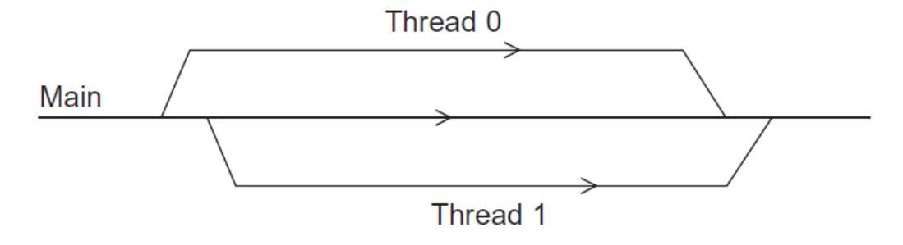
矩阵乘法
所有数据对所有线程都是共享的。
对于矩阵 A[m][n] 和向量 x[n]，想计算结果向量 y[m]，即：
代码如下：
for (int i=0; i<m; i++){
y[i] = 0;
for (int j=0; j<n ;j++){
y[i] = A[i][j] * X[j];
}
}程序通过 pthread 创建多个线程，实现对矩阵 A 的并行行划分，每个线程独立计算对应的 y 向量部分，避免数据竞争，显著提升大规模矩阵向量乘法性能。
但是其实很有可能伪共享了。
临界区（重点）
当多个线程尝试去更新同一个共享变量会出现问题。
例子：两条线程几乎同时执行：
y = compute(); // Thread 0: y = 1; Thread 1: y = 2
x = x + y;其中 x 是共享变量，初始值为 0。
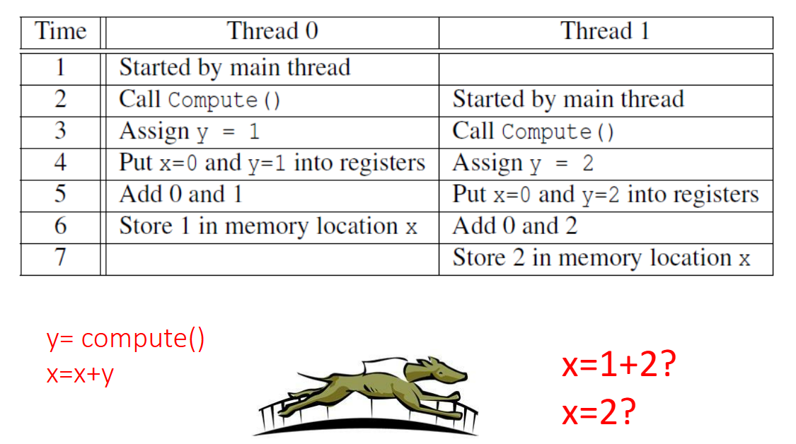
上面例子的执行结果是不确定性的，即同样输出但是结果可能不同。
临界区是一个代码段，一次只能由一个线程在内执行，通常都是更新共享变量操作。
竞争条件是多个线程同时读取某个共享变量并且进行操作，该共享变量的值与线程执行的顺序有关。
忙等待（重点）
忙等待是一种同步方式：线程不停地检查某个条件，直到条件满足为止，但在此期间它什么“有用工作”也没做，只是在空转 CPU。
刚刚例子的代码这样修改：
y = Compute(my_rank); // 每个线程先进行计算
while (flag != my_rank); // 忙等待：轮到我才能继续
x = x + y; // 执行关键操作
flag++; // 轮到下一个线程- 线程不断在等待和运行之间切换，会增加整体的运行时间。
互斥量（重点）
处于忙等待的线程仍然在持续的使用 cpu，所以引出了互斥锁和信号量这两个方法。
互斥锁是一种用于线程间同步的锁机制，保证同一时刻只有一个线程可以进入临界区。
Pthread_mutex_init (初始化)
int pthread_mutex_init(pthread_mutex_t* mutex_p,
const pthread_mutexattr_t* attr_p); // 一般填 NULLpthread_mutex_lock (上锁)
int pthread_mutex_lock(pthread_mutex_t* mutex_p);pthread_mutex_unlock (释放锁)
int pthread_mutex_unlock(pthread_mutex_t* mutex_p);pthread_mutex_destroy (销毁锁)
int pthread_mutex_destroy(pthread_mutex_t* mutex_p);例子：
pthread_mutex_t lock;
pthread_mutex_init(&lock, NULL);
pthread_mutex_lock(&lock); // 加锁
// 临界区代码
pthread_mutex_unlock(&lock); // 解锁
pthread_mutex_destroy(&lock);忙等待和互斥量性能比较
当使用忙等待进行线程同步，并且线程数大于可用 CPU 核心数时，性能严重下降甚至变差，而使用 互斥量 则可以稳定保持高效。
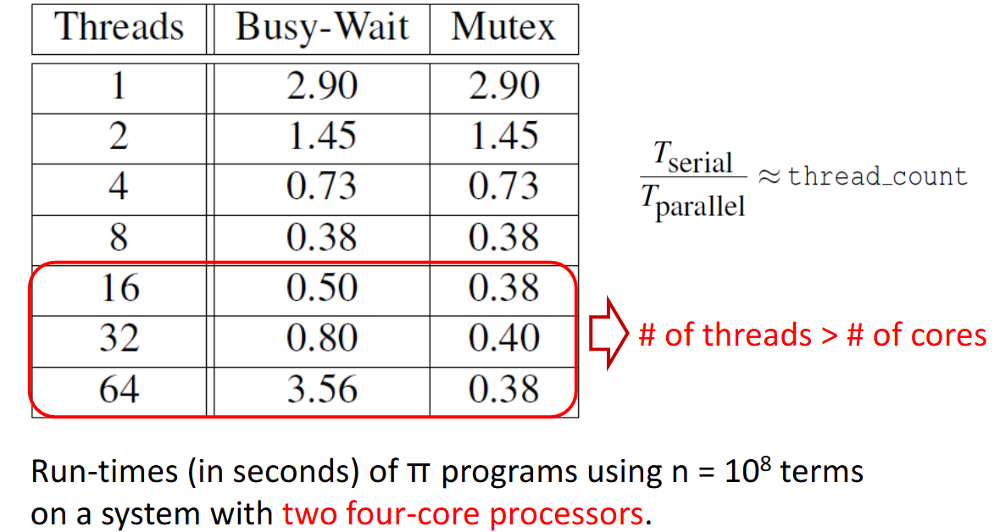
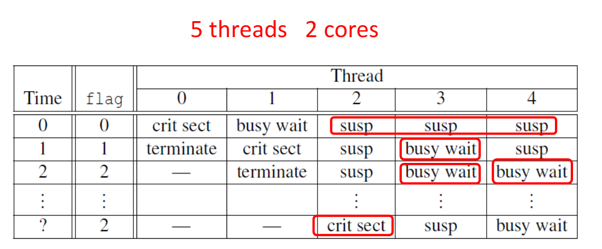
- 假设有两个核，五个线程，一开始 flag 为 0，执行完后 flag 为 1，选择 thread 3 进入核内，再次执行完后 flag 为 2，选择 thread 4 进入核内，但是此时应该执行 thread 2，最终导致两个核都忙等待。
- 忙等待：随机选择一个线程到核内，有可能没有选中 flag 的线程。
- 互斥量：os 选择一个线程到核内，100% 一定能跑。
尽管忙等待总是浪费 CPU 的资源，但是可以确定线程执行临界区的顺序；像互斥锁的话就不可以确定，因为是操作系统选取线程进入临界区的。
所以不太能够用互斥锁来实现矩阵乘法，因为矩阵乘法没有交换律。 <img src="./image-20250619172507969.png" alt="image-20250619172507969" style="zoom:33%;" />
信号量
一般一个线程需要等待第二个线程执行某些操作的同步模式，更加适合用信号量。
信号量与互斥锁最大的区别是信号量是不属于某个线程的，信号量可以允许多个线程进入临界区。
信号量不是 pthread 的一部分，所以需要引入：
#include <semaphore.h>sem_init (初始化)
int sem_init(sem_t* semaphore_p, int shared, unsigned initial_val);shared：是否用于进程间共享：通常为0表示线程间。
sem_wait (等待)
int sem_wait(sem_t* semaphore_p);- 如果信号量值 > 0，减一并继续执行。
- 如果信号量值 = 0，则阻塞，直到别的线程释放资源。
sem_post (释放)
int sem_post(sem_t* semaphore_p);- 增加信号量值（+1）。
- 如果有其他线程在等待，会唤醒其中一个。
sem_destroy (摧毁)
int sem_destroy(sem_t* semaphore_p);例子：
sem_t sem;
sem_init(&sem, 0, 1); // 二进制信号量，类似互斥锁
sem_wait(&sem); // 加锁
// 临界区
sem_post(&sem); // 解锁
sem_destroy(&sem); // 程序结束后销毁路障与条件变量（原来是不用的 哭）
路障是一种同步机制，使一组线程在某一点上“集合”，等所有线程都到达后，才统一继续执行。
忙等待+互斥锁实现路障
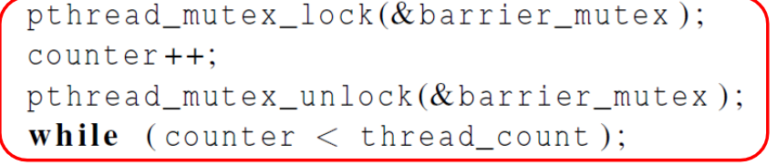
信号量实现路障
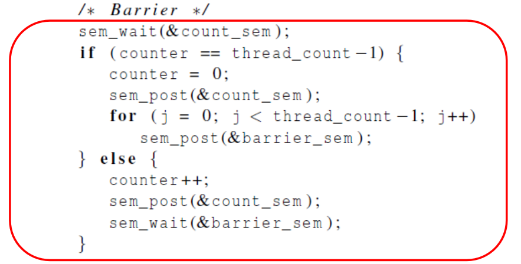
- 最后一个线程：负责释放之前阻塞的
thread_count - 1个线程，它自己不需等待，可以直接继续。 - 其他线程：先更新 counter，再释放锁，然后自己等待（直到最后一个线程唤醒它）
条件变量
条件变量用于让线程在等待某个“条件”成立时挂起（阻塞）自己，并由其他线程在条件满足时发出信号唤醒它。
需要搭配互斥锁一起使用。
伪代码：
pthread_mutex_lock(&mutex);
if (condition) {
pthread_cond_signal(&cond); // 唤醒其他线程
} else {
pthread_cond_wait(&cond, &mutex); // 自动释放锁 等待被唤醒 重加锁 mutex
}
pthread_mutex_unlock(&mutex);实现路障：
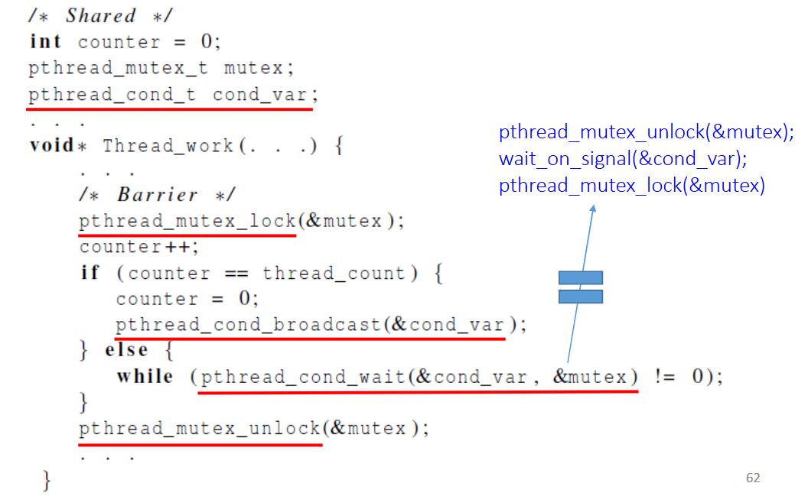
pthread_cond_wait(&cond, &mutex);等价于这三个动作：
pthread_mutex_unlock(&mutex); // 自动释放锁
wait_on_signal(&cond); // 阻塞当前线程
pthread_mutex_lock(&mutex); // 被唤醒后自动重新加锁被唤醒后一定要自动加锁，因为是在临界区内被唤醒的。
多个线程被唤醒之后，如果不重新加锁：
- 同时进入临界区
- 同时访问或修改共享数据
读写锁（感觉不会考那么细）
读写锁允许多个线程同时读共享资源，但只允许一个线程写，且写操作时禁止其他线程读或写。
| 锁状态 | 能否有其他线程同时操作？ |
|---|---|
| 无锁 | 所有线程可以竞争加锁 |
| 读锁（共享） | 其他线程可继续加读锁 |
| 写锁（独占） | 不允许其他读/写线程加锁 |
初始化和销毁
pthread_rwlock_t rwlock;
pthread_rwlock_init(&rwlock, NULL);
pthread_rwlock_destroy(&rwlock);加读锁 (共享)
pthread_rwlock_rdlock(&rwlock);- 如果当前没有写锁，则可以成功加锁
- 多个线程可以同时持有读锁
加写锁（独占）
pthread_rwlock_wrlock(&rwlock);- 只有当没有其他线程持有读锁或写锁时才会成功
- 独占访问资源
解锁（读或写都用这一个）
pthread_rwlock_unlock(&rwlock);多线程链表操作
主要的操作分为 写 和 读。
因为不能多个线程同时修改一个指针，所以需要互斥：
- 整个链表加锁。
- 为每个节点加锁。
- 读写锁。
当很多读操作，比较少写操作的时候，读写锁对比其他两个方法效率高很多。
当写操作比较多时，读写锁效率只会比整个链表加锁快一点。（没上面快得多）
无论如何，为每个节点加锁都是最慢的，而且占用空间更大了。
缓存、缓存一致性、伪共享（重点）
因为缓存的设计考虑了时间和空间局部性原理，所以一个处理器想要访问 x，那么需要把包含 x 的一个 cache line 都读到缓存。
缓存一致性：就是多个核的缓存都有某个共享变量的副本，但是其中一个核修改了这个共享变量，就会导致其他核对于该变量的缓存出现不一致情况。
接下来，每个矩阵乘法都需要做相同次数的浮点运算：
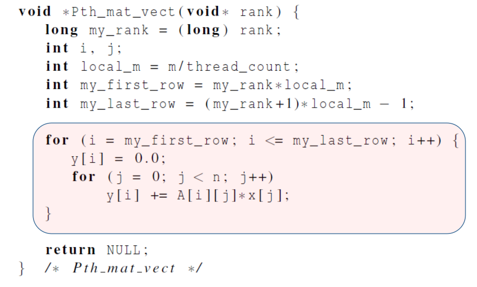
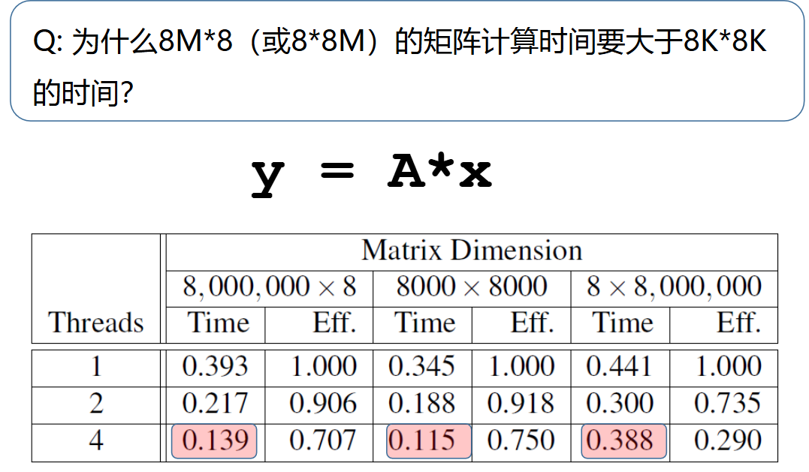
- (8M x 8) (8 * 1) = (8M x 1)
因为会发生很多的 cache 写缺失 (y)。
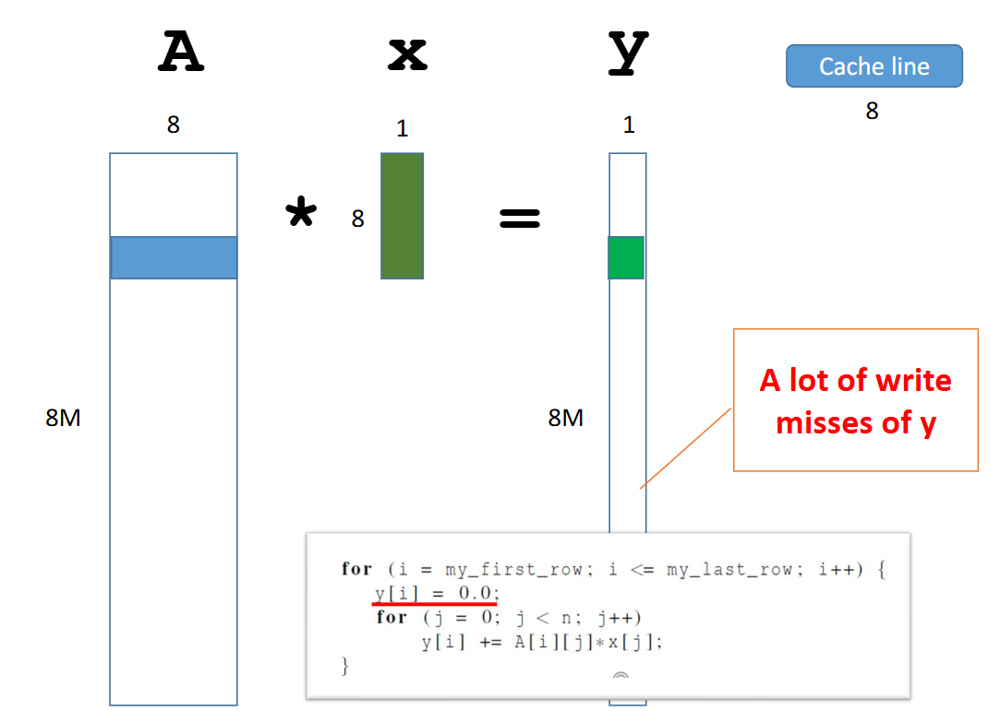
- (8 x 8M) (8M * 1) = (8 x 1)
发生很多的读缺失 (X)。
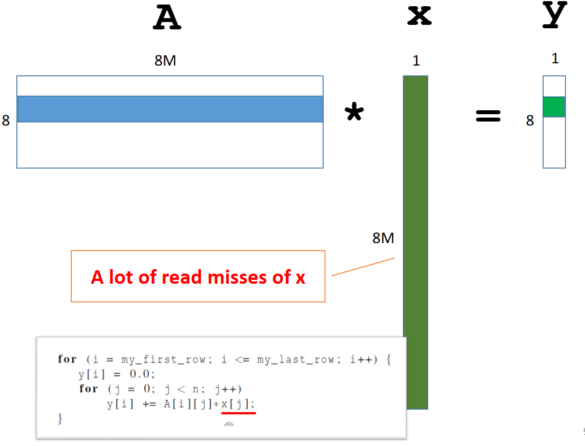
并且，在多核多线程的情况下，(8 x 8M) (8M * 1) = (8 x 1) 的运算时间最长，因为发生了严重的伪共享。
伪共享是指：多个线程访问不同变量，变量本身不共享，但它们恰好处于同一 cache line 内，从而导致无意义的缓存一致性开销。
y[0] ~ y[7] 只有 8 个整数，占据一个 cache line（假设是 64 字节）
于是：
- 每个线程修改不同的
y[i]，看似无冲突。 - 但它们实际上落在同一个 cache line 上。
- 每次写都导致整个 cache line 在各核之间来回 失效/同步 伪共享。
线程安全性（重点）
如果一个代码块可以同时被多个线程执行而不出问题的话，这个代码块就是线程安全的。
举个多线程 strtok 的例子：利用信号量来控制线程轮流读取字符串
void *Tokenize(void *rank) {
long my_rank = (long) rank;
int count;
int next = (my_rank + 1) % thread_count;
char *fg_rv;
char my_line[MAX];
char *my_string;
// 第一次读入一行（必须按顺序）
sem_wait(&sems[my_rank]);
fg_rv = fgets(my_line, MAX, stdin);
sem_post(&sems[next]);
while (fg_rv != NULL) {
printf("Thread %ld > my line = %s", my_rank, my_line);
count = 0;
my_string = strtok(my_line, " \t\n");
while (my_string != NULL) {
count++;
printf("Thread %ld > string %d = %s\n", my_rank, count, my_string);
my_string = strtok(NULL, " \t\n");
}
// 继续读入下一行
sem_wait(&sems[my_rank]);
fg_rv = fgets(my_line, MAX, stdin);
sem_post(&sems[next]);
}
return NULL;
}sems[0] = 1：线程 0 的信号量初始值是 1，表示线程 0 一开始就可以运行。sems[1..n-1] = 0：其他线程初始为 0，表示必须等待被唤醒才能运行。
但是输出结果如下：
这是因为 strtok 的静态函数指针变量被共享了，即线程 0 执行完第一次后，静态位置改了，线程 1 再调用 strtok(NULL, ...) 就用错了上下文，结果错乱！
并且这个例子还说明了不确定性：即相同的输入，但是输出却不同。
可以使用 线程安全版本的 strtok 实现 strtok_r。
第五章 用OpenMP进行共享内存编程
重点：如何创建线程，如何隐式创建线程，如何调度（schedule），如何修饰本来就有的 for 循环，如何调度才能负载均衡，作用域。
注意看作用域，在 #pragma omp parallel 中，如果在基本块外就是共享的，在基本块内就是私有的。
为什么共享内存系统有两个 API：
- pthread 更加底层，需要 coder 详细的定义线程每个行为。
- Openmp 抽象的更加高层，甚至是为了对已有的串行程序进行并行化而设计的。
#include <stdio.h>
#include <stdlib.h>
#include <omp.h>
void Hello(void); /* Thread function */
int main(int argc, char* argv[]) {
/* Get number of threads from command line */
int thread_count = strtol(argv[1], NULL, 10);
#pragma omp parallel num_threads(thread_count)
Hello();
return 0;
} /* main */
void Hello(void) {
int my_rank = omp_get_thread_num();
int thread_count = omp_get_num_threads();
printf("Hello from thread %d of %d\n", my_rank, thread_count);
} /* Hello */编译
#pragma 是 C/C++ 的预处理器指令：
#pragma用于给编译器“建议”或“指示”- 如果编译器不认识它，就会忽略它，不报错
gcc -fopenmp hello.c -o hello
./hello 4可能会有不一样的输出：
程序
OpenMP 的 pragma 总是以 # pragma omp 开始。
最基本的并行指令如下：
# pragma omp parallel- 创建的线程数由运行时系统决定，一般是每个核一个线程。
可以添加 num_threads 子句：
# pragma omp parallel num_threads(thread_count)当程序运行到 parallel 指令时：
- 原本的线程继续执行，另外 thread_count - 1 个线程被启动。
- 执行并行块的线程集合（原本主线程和新启动的线程）叫做线程组。
- 并行代码块末尾会有一个隐式的 barrier，等所有线程组的线程都完成后，新启动的线程被终止，而主线程继续执行下去。
记得有隐式路障！
梯形积分
因为每个线程需要将它算的部分结果累积到共享变量中，pthread 有互斥锁，而 omp 使用以下指令：
# pragma omp critical- 这条指令告诉编译器自行安排线程互斥访问代码块。
- omp 层次还是比 pthread 高很多的。
代码如下：
变量的作用域
OpenMP 中变量的作用域：
- 每个线程是否拥有自己的一份变量（私有）
- 是否访问共享变量（共享）
总结：在 #pragma omp parallel 指令之前声明的变量，默认在并行线程中是共享的， 而在 并行代码块内部新声明的变量，则是每个线程私有的。
归约子句
计算梯形积分的时候，需要将它算的部分结果（私有变量）累积到共享变量中：
global_result = 0.0; // 共享变量
#pragma omp parallel num_threads(thread_count)
{
double my_result = 0.0; // 每个线程的私有变量
my_result += Local_trap(...); // 每个线程独立计算一部分积分
# pragma omp critical
global_result += my_result; // 临界区：合并结果
}my_result是每个线程私有的，避免了数据竞争。global_result += my_result;是一个共享写操作，如果不加保护，就会出现数据竞争。
OpenMP 实现了归约子句来帮助 coder 不需要去想这些问题：
#pragma omp parallel reduction(op : variable)op是归约操作（+、*、max等）。（减法-不行）
例如要算很多个数相减，第一个线程的局部结果是 -1，第二个的结果是 -3，答案要 -4，但是实际上会等于 -1 - -3 = 2。
variable是要进行归约的变量。
OpenMP 会自动：
- 为每个线程创建
variable的私有变量（副本）。 - 每个线程独立计算。
- 最后自动将所有副本使用指定操作“合并”到原始变量上。
global_result = 0.0;
#pragma omp parallel num_threads(thread_count)\
reduction(+:global_result) // 归约子句
global_result += Local_trap(...); // 每个线程累加自己的部分parallel for 指令（重点）
#pragma omp parallel for 是 OpenMP 中常用的一条并行化循环的指令，用于将一个 for 循环的迭代任务分配给多个线程并行执行。
直接在 for 循环前加：# pragma omp for num_threads(thread_count)。
该指令后面只能跟 for 循环！！
这个 for 循环会被系统使用块划分，即 n/thread_count 次迭代分到线程 0，接下来的 n/thread_count 次迭代分到线程 1。
例子：串行版本梯形积分
h = (b - a) / n;
approx = (f(a) + f(b)) / 2.0;
for (i = 1; i <= n-1; i++)
approx += f(a + i * h);
approx = h * approx;使用 parallel for：
h = (b - a) / n;
approx = (f(a) + f(b)) / 2.0;
#pragma omp parallel for num_threads(thread_count) \
reduction(+: approx)
for (i = 1; i <= n-1; i++)
approx += f(a + i * h);
approx = h * approx;- 使用归约：如果直接让多个线程同时执行
approx += ...： - 会发生 数据竞争（data race）。
- 结果不确定，线程之间会互相覆盖
approx。 - 这个循环变量
i就算是在代码块前定义但是作用域仍然是私有的，即每个线程之间的i不会互相影响。
for 循环限制
- for 循环的循环次数必须在循环开始前就确定。
- for 循环中不能使用 break、return，因为会影响线程调度。
- 关系运算符只能使用：
<=,<,>=,>。 - 其他都正正常常就行。
总结：运行时系统必须能够在执行前就知道迭代的次数，唯一例外的是：在循环体中可以有一个 exit 调用，因为exit 是直接退出程序。
数据依赖性
在并行循环中，如果某次迭代依赖于另一轮迭代的结果，就会发生数据依赖性冲突，不能直接并行化。
因为可能另一轮迭代还没计算好，你就直接使用了。
例子：不能并行
for (int i = 1; i < n; i++) {
a[i] = a[i-1] + 1;
}- 第
i次迭代用了a[i-1]的值
例子：可以并行
for (int i = 0; i < n; i++) {
b[i] = c[i] + d[i];
}# pragma omp parallel for num_threads(thread_count)
for(i = 0; i < n; i++){
x[i] = ...
y[i] = 2 * x[i]
}- 没有数据依赖性，因为 x[i] 的计算和接下来的使用总是分到同一个线程。
pi 值估计
串行版本实现：
double factor = 1.0;
double sum = 0.0;
for (k = 0; k < n; k++) {
sum += factor / (2 * k + 1);
factor = -factor;
}
pi_approx = 4.0 * sum;第一个 omp 并行版本：
double factor = 1.0;
double sum = 0.0;
#pragma omp parallel for num_threads(thread_count) reduction(+:sum)
for (k = 0; k < n; k++) {
sum += factor / (2 * k + 1);
factor = -factor;
}
pi_approx = 4.0 * sum;- 存在数据依赖，假设第 k 次迭代分给一个线程，k+1 次迭代分给第二个线程，那么 factor 可能会出现错误。
- 并且 factor 是在代码块前定义的，所以是所有线程共享的，也有可能发生数据依赖。
更新后的版本：
double sum = 0.0;
double factor;
#pragma omp parallel for num_threads(thread_count) \
reduction(+:sum) private(factor) // 设置为私有作用域
for (k = 0; k < n; k++) {
if (k % 2 == 0) // 避免数据依赖
factor = 1.0;
else
factor = -1.0;
sum += factor / (2 * k + 1);
}
pi_approx = 4.0 * sum;- 将
factor设为 私有变量，每个线程都自己独立计算，避免数据依赖。
关于作用域
可以使用子句 default(none)，这样需要显示说明在块内需要使用的变量作用域以及在块外声明的变量的作用域。
double sum = 0.0;
double factor;
#pragma omp parallel for num_threads(thread_count) \
reduction(+:sum) private(factor, k)\ // 设置为私有作用域
shared(n)
for (k = 0; k < n; k++) {
if (k % 2 == 0) // 避免数据依赖
factor = 1.0;
else
factor = -1.0;
sum += factor / (2 * k + 1);
}
pi_approx = 4.0 * sum;- 变量
k也是私有的。 - 归约变量
sum同时有私有和共享作用域的属性。
循环调度（必考）
在并行循环中，如果前 n/thread_count 次迭代分到线程 0，接下来的 n/thread_count 次迭代分到线程 1... 这种简单的块调度方法肯定不是最优的，例如假设循环迭代次数越大，计算越复杂的情况，那么最后一个线程的压力肯定大过前面的线程，就没有负载均衡了。
举例：如果总共 n=100 次迭代，有 4 个线程，则分为：
- 线程 0：
0 ~ 24 - 线程 1：
25 ~ 49 - 线程 2：
50 ~ 74 - 线程 3：
75 ~ 99
问题：
如果循环体中的计算量随着 i 增大而增加（如 i*i 或递归），
- 那么线程 3 工作量远超线程 0。
- 导致：线程 0 很快空闲，而线程 3 还在忙碌 → CPU 空闲 → 整体性能差
schedule 子句
schedule(<type>, chunksize)例子：
#pragma omp parallel for num_threads(thread_count) \
reduction(+:sum) schedule(static, 1)
for (i = 0; i <= n; i++)
sum += f(i);一共有以下类型的调度类别：
| 类型 | 分配时机 | 特点 |
|---|---|---|
static | 循环开始前 | 分配固定块，最快，但可能不均衡 |
dynamic / guided | 循环执行时 | 动态分配，更适合负载不均 |
auto | 编译器和运行时系统决定 | 自动选择调度策略 |
runtime | 程序运行时决定 | 可调试灵活 |
- 只有 static 和 dynamic 和 guided 才有 chunk_size。
static 调度类型
其实就是以轮转的方式，每次一个线程拿 chunk_size 大小的块。
例子：循环有 12 次迭代：0 ~ 11。一共有 3 个线程。设置的 chunk size 为 1，即每次只发给每个线程 1 次迭代，采用轮流分配（循环分配）。
分配方式如下：
- 线程 0：分配迭代号
0, 3, 6, 9 - 线程 1：分配迭代号
1, 4, 7, 10 - 线程 2：分配迭代号
2, 5, 8, 11
这种调度方式被称为 轮转调度，适用于每次迭代计算量均匀的场景，可以防止某些线程提前做完而浪费资源。
负载均衡的效果没有 dynamic 和 guided 好。
开销小。
默认缺省调度实际上就是 schedule (static, n/thread_count)。
这里的参数 chunk_size 是可以被忽略的（忽略就按照上面默认的 chunk 大小）。
dynamic 调度类型
dynamic 调度：
循环迭代被分成一个个 chunk_size 的小块。
线程执行完自己手上的块之后，就去动态领取下一个块。
相当于“线程抢任务”，谁干完谁继续拿。
chunk_size 被忽略就默认为 1。
举例：
#pragma omp parallel for schedule(dynamic, 2)
for (int i = 0; i < 12; i++) {
work(i);
}- 如果有 3 个线程，开始时每个线程会抢到 2 个任务（比如 0-1，2-3，4-5）。
- 执行快的线程会更快抢到 6-7，8-9，10-11 等等。
- 因为需要频繁同步调度任务，会有一定的调度开销。
guided 调度类型
guided调度：
和 dynamic 一样是动态调度。
但每次分配的块 从大到小逐渐减少：
- 块的大小近似为 剩下的迭代数/线程数。
- 开始时分配很大块。
- 后期慢慢减小，最后按
chunk_size保底。
只有可能最后的块的大小会比 chunksize 小。
runtime 调度类型
就是修改环境变量，使得执行程序的时候使用上面三种调度类型的其中一种。
调度方式的区别
static 调度
- 优点：调度开销最小，在运行前即可调度完成。
- 缺点：若迭代耗时差异大，会导致线程负载不均。
dynamic 调度
- 优点：负载均衡的最好。
- 缺点：开销大于 static 。
guided 调度
- 优点：有点像这两个调度的综合，适合对大规模迭代更有帮助。
- 缺点：调度开销最大。
小循环建议使用 dynamic，大循环可以使用 guided。
dynamic 是预先已经分割好的，而 guided 是需要运行时根据总的 n 除以线程数大小作为初始，然后再慢慢减小的...
我自己认为 dynamic 的开销大于 guided。
生产者和消费者问题（我觉得不是重点）
以下OpenMP 环境下实现消息传递机制的代码框架，包括发送与接收消息。
消息传递主循环：
for (sent_msgs = 0; sent_msgs < send_max; sent_msgs++) {
Send_msg();
Try_receive();
}
while (!Done()) {
Try_receive();
}- 主发送循环中，每轮先发送一条消息（
Send_msg()），然后尝试接收一条消息（Try_receive()）。 - 当达到最大发送数后，继续执行一个
while循环来确保把所有接收到的消息都处理完。 Done()是某种标志函数，表明“消息都收完了”。
发送消息逻辑：
mesg = random();
dest = random() % thread_count;
#pragma omp critical
Enqueue(queue, dest, my_rank, mesg);- 随机生成一个消息值和目标线程
dest。 - 使用
#pragma omp critical临界区，确保多个线程不会同时访问共享的queue（消息队列）。
接收信息逻辑：
if (queue_size == 0)
return;
else if (queue_size == 1)
#pragma omp critical
Dequeue(queue, &src, &mesg);
else {
Dequeue(queue, &src, &mesg);
Print_message(src, mesg);
}- 如果消息队列为空，直接返回。
- 如果队列中只有一条消息，为了安全性，加上临界区进行保护。
因为只有一条消息，如果拿出消息的时候，有另外一个线程发送消息到这个队列，就会发生错误。
- 如果队列中有多条消息，直接取出并打印。
终止程序逻辑：
queue_size = enqueued - dequeued;
if (queue_size == 0 && done_sending == thread_count)
return TRUE;
else
return FALSE;done_sending == thread_count 表示所有线程的 for 循环都执行完了，即：
- 所有线程都执行完
Send_msg()。 - 每个线程在结束时做了
done_sending++。 - 当这个计数器等于线程总数，说明没人再发消息了。
启动
每个线程都对自己的消息队列进行初始化。
有个问题是：有的线程可能比其他线程更快地完成队列初始化，这就可能导致线程 A 想往线程 B 的队列里发送消息时，线程 B 的队列还没分配好，程序就崩了。
前面提到 OpenMP 有隐式路障，其实也有显式路障。
#pragma omp barrier所有线程在到达 #pragma omp barrier 后都会等待其他线程也到达此处，一旦所有线程都准备好了，大家再一起继续。
atomic 指令
对于某些操作，如果不想使用 #pragma omp critical 也可以使用 #pragma omp atomic。
只能够保护接下来一条 C 语言赋值语句所形成的临界区，只能保护对一个共享变量的单一更新操作。
例子：可以保护
#pragma omp atomic
x += 1;
#pragma omp atomic
x++;
#pragma omp atomic
x = y; // 原子写（write）
#pragma omp atomic
x *= 2; // 可以乘自己例子：不可以保护
#pragma omp atomic
x += y++; // 两个变量被修改：x 和 y临界区和锁
默认情况下：
#pragma omp critical
{
// 代码 A
}这个 critical 区域会全局锁住，任何线程都不能同时执行任意其他 critical 区块，即使是在完全无关的地方。
解决方案：
#pragma omp critical(queue0)
{
// 代码 B
}这样，OpenMP 会只对具有同名 queue0 的临界区加锁。
OpenMP 有关锁的函数如下：
omp_init_lock(&lock);
omp_set_lock(&lock);
omp_unset_lock(&lock);
omp_test_lock(&lock);如果嵌套使用 #pragma omp critical 会导致死锁！
#pragma omp critical
{
// 临界区 A
...
#pragma omp critical
{
// 临界区 B
...
}
}首先，这两个临界区是同名的，外层进入临界区并获取锁，内层再试图获取同一个锁，线程卡在自己锁自己，造成死锁。
如果使用临界区命名也不能避免，因为可能会导致死锁：
#pragma omp critical(one)
{
// 临界区 A
...
#pragma omp critical(two)
{
// 临界区 B
...
}
}| 时间 | 线程u | 线程v |
|---|---|---|
| 0 | 进入临界区1 | 进入临界区2 |
| 1 | 进入临界区2 | 进入临界区1 |
| 2 | 阻塞 | 阻塞 |
死锁！
临界区和锁和atomic指令的区别
如果临界区只有特定的赋值语句，可以使用 atomic。
但是修改同一变量的 atomic 语句是互斥进行的。
如果不能使用 atomic 却能使用 critical，那么使用 critical 语句。
锁一般不是用来互斥代码段的，而是互斥数据结构的。
atomic 语句和 critical 语句是不会互斥的，即下列情况的输出是不确定的：
# pragma omp atomic
x += 1
# pragma omp critical
x = 1缓存、缓存一致性、伪共享（重点）
因为缓存的设计考虑了时间和空间局部性原理，所以一个处理器想要访问 x，那么需要把包含 x 的一个 cache line 都读到缓存。
缓存一致性：就是多个核的缓存都有某个共享变量的副本，但是其中一个核修改了这个共享变量，就会导致其他核对于该变量的缓存出现不一致情况。
接下来，每个矩阵乘法都需要做相同次数的浮点运算：
- (8M x 8) (8 * 1) = (8M x 1)
因为会发生很多的 cache 写缺失 (y)。
- (8 x 8M) (8M * 1) = (8 x 1)
发生很多的读缺失 (X)。
并且，在多核多线程的情况下，(8 x 8M) (8M * 1) = (8 x 1) 的运算时间最长，因为发生了严重的伪共享。
伪共享是指：多个线程访问不同变量，变量本身不共享，但它们恰好处于同一 cache line 内，从而导致无意义的缓存一致性开销。
y[0] ~ y[7] 只有 8 个整数，占据一个 cache line（假设是 64 字节）
于是：
- 每个线程修改不同的
y[i]，看似无冲突。 - 但它们实际上落在同一个 cache line 上。
- 每次写都导致整个 cache line 在各核之间来回 失效/同步 伪共享。
线程安全性（重点）
如果一个代码块可以同时被多个线程执行而不出问题的话，这个代码块就是线程安全的。
举个多线程 strtok 的例子：利用信号量来控制线程轮流读取字符串
void *Tokenize(void *rank) {
long my_rank = (long) rank;
int count;
int next = (my_rank + 1) % thread_count;
char *fg_rv;
char my_line[MAX];
char *my_string;
// 第一次读入一行（必须按顺序）
sem_wait(&sems[my_rank]);
fg_rv = fgets(my_line, MAX, stdin);
sem_post(&sems[next]);
while (fg_rv != NULL) {
printf("Thread %ld > my line = %s", my_rank, my_line);
count = 0;
my_string = strtok(my_line, " \t\n");
while (my_string != NULL) {
count++;
printf("Thread %ld > string %d = %s\n", my_rank, count, my_string);
my_string = strtok(NULL, " \t\n");
}
// 继续读入下一行
sem_wait(&sems[my_rank]);
fg_rv = fgets(my_line, MAX, stdin);
sem_post(&sems[next]);
}
return NULL;
}sems[0] = 1：线程 0 的信号量初始值是 1，表示线程 0 一开始就可以运行。sems[1..n-1] = 0：其他线程初始为 0，表示必须等待被唤醒才能运行。
但是输出结果如下：
这是因为 strtok 的静态函数指针变量被共享了，即线程 0 执行完第一次后，静态位置改了，线程 1 再调用 strtok(NULL, ...) 就用错了上下文，结果错乱！
并且这个例子还说明了不确定性：即相同的输入，但是输出却不同。
第六章 Cuda异构编程
不会考的特别细，重点：线程是如何组织起来的，如何使用全局内存，设备存储，主机存储，统一内存寻址。
CUDA 是一种 异构编程模型（同时有 CPU 和 GPU），CPU（host）负责管理与调度，GPU（device）负责大规模并行计算，二者通过 PCIe 通信，协调工作。
Cuda c 程序架构
可以发现 GPU 几乎全部都是 ALU。
CUDA C 程序由两部分组成：
- Host Code（主机代码）：运行在 CPU 上。
- Device Code（设备代码）：运行在 GPU 上。
Host Code
- 用传统 C 写的普通代码。
- 负责控制程序流程，包括数据分配、传输、调用 GPU。
- 在 CPU 上串行执行。
- 通过 PCIe 总线 与 GPU 通信。
Device Code
- 包含用 CUDA C 写的
kernel函数。 - 使用
__global__等 CUDA 关键词标记。 - 被多个 GPU 线程并行执行，适合数据并行处理。
- 所有线程访问共享的设备内存。
如何申请和撤销 显存 的空间
申请 GPU 显存：cudaMalloc：
cudaMalloc(void **devPtr, size_t size);devPtr：指向 GPU 端的指针地址。size：申请的字节数。
撤销 GPU 显存：cudaFree：
cudaFree(void *devPtr);搬运数据：cudamemcpy：
cudaMemcpy(void *dst, const void *src, size_t count, cudaMemcpyKind kind);dst：目标地址。src：源地址。count：拷贝的字节数。kind：拷贝方向，常用值包括：cudaMemcpyHostToDevice：CPU → GPUcudaMemcpyDeviceToHost：GPU → CPU
示例：
#include <stdio.h>
#include <cuda_runtime.h>
int main() {
int N = 5;
int h_array[N] = {10, 20, 30, 40, 50}; // 主机端数组
int h_result[N]; // 主机端结果数组
int *d_array; // 设备端指针
// 1. 申请 GPU 显存
cudaMalloc((void**)&d_array, N * sizeof(int));
// 2. 将数据从主机拷贝到设备（CPU → GPU）
cudaMemcpy(d_array, h_array, N * sizeof(int), cudaMemcpyHostToDevice);
// 3. 将数据从设备拷贝回主机（GPU → CPU）
cudaMemcpy(h_result, d_array, N * sizeof(int), cudaMemcpyDeviceToHost);
// 4. 打印结果
printf("Copied from device: ");
for (int i = 0; i < N; i++) {
printf("%d ", h_result[i]);
}
printf("\n");
// 5. 释放 GPU 显存
cudaFree(d_array);
return 0;
}核函数
什么是核函数
- 本质上是一个 用特殊 CUDA 关键字（如
__global__）定义的 C 函数； - 被所有线程执行，用于并行处理数据。
执行模型是 SPMD：
- 所有线程执行相同的程序代码。
- 每个线程处理不同的数据片段。
- 数据范围通过线程 ID（
threadIdx）和线程块 ID（blockIdx）自动划分。
限制
kernel（核函数）的关键限制条件：
- 只能访问设备内存（不能访问主机 CPU 内存）。
- 必须返回
void（不能有返回值）。 - 不支持变参函数。
- 参数不能是引用类型（如
const int&不合法）。 - 不支持静态变量（不能
static int x = 0）。
示例：
__global__ void vecAddKernel(float *A, float *B, float *C, int N) {
int tid = blockDim.x * blockIdx.x + threadIdx.x;
if (tid < N)
C[tid] = A[tid] + B[tid];
}- 可以用 const int N，不能使用 const int& N。
调用核函数
kernel<<<gridDim, blockDim>>>(args);kernel：定义的__global__函数名。gridDim：网格中有多少个 block。blockDim：每个 block 中有多少个线程。args：传给核函数的参数（必须是值传递、指针传递）。
同步
与 OpenMP 不同（隐式路障），CUDA 核函数为异步执行。
调用完成之后，控制权立刻返回 CPU。
cudaDeviceSynchronize()
阻塞主机（CPU），直到 GPU 上所有之前提交的任务都执行完毕。
Cuda 线程组织（重点）
核心概念：Grid + Block + Thread
CUDA 中线程的组织结构是三层：
- Thread（线程）：最小的执行单元。
- Block（线程块）：一组线程，一般有 32 倍数的线程（一个 warp 是 32 个线程）。
- Grid（网格）：一组线程块。
每次调用一个 kernel，相当于启动一个 grid → grid 中含有多个 block → 每个 block 中含有多个 thread。
Block 和 Grid 都是支持三个维度的。
dim3 blockDim(x, y, z); // 每个 block 中线程的维度
dim3 gridDim(x, y, z); // 每个 grid 中block的维度
kernel<<<gridDim, blockDim>>>(...);上图的 Cuda core 就是一个 ALU。
示例如下：
线程束执行（分支分化）
线程束执行方式：
- 每个线程束（warp 32 个线程）在一个 SM 上按 SIMD 模式执行。
- 所有线程必须执行同一条指令。
- 这大大减少了控制逻辑复杂性，提高吞吐量。
分支分化：
- 当 warp 内线程遇到不同的控制流（如
if/else），就会出现分支分化。 - 这时，warp 会按路径分两次执行：
- 先执行 path A，禁用 path B 的线程。
- 再执行 path B，禁用 path A 的线程。
- 这会造成效率下降（串行执行）。
示例：
// kernel_a 不会分支分化：
if (blockIdx.x % 2) { ... } else { ... }
// kernel_b 会分支分化：
if (threadIdx.x % 2) { ... } else { ... }- 不同的
blockIdx不会分支分化，因为 block 都是一起执行的。 threadIdx.x是同一个 warp 内不同线程的编号，不同线程走不同分支会导致分支分化。
divergent loop：
- 同一个 warp 内的线程执行相同的
for循环，但循环次数不同，就会发生 divergent loop。
示例：
int N = a[threadIdx.x]; // 每个线程的 N 不同
for (int i = 0; i < N; i++) {
do_work();
}CUDA 的 warp 是SIMD 执行模式：
一次只能让warp 中所有线程执行同一条指令。
所以当这些线程进入循环后，GPU 是这样做的：
- 第 1 次循环：
- 所有线程都执行第 1 次。
- 第 2 次循环：
- 只有 N≥2 的线程继续，N=1 的线程被屏蔽
- 第 3~8 次循环：
- 每一轮都只执行还没做完的线程
- 所以就要一轮一轮串行处理每个线程的
do_work()
同步
SIMD 不等于严格同步，因为 warp 内每个线程的执行速度不一致。
__syncthreads()
在一个 block 内所有线程之间建立同步屏障。
- 只有当 block 中所有线程都执行到这里时，后续代码才会执行。
- 常用于共享内存协作场景，确保写入后再读取。
- 适用于block 级线程同步。
这个情况会发生死锁，因为块内的所有线程不能同时执行到同一个路障。
cuda 内存模型（重点）
CUDA 中的存储层次结构主要包括：寄存器、本地内存、共享内存、全局内存、常量内存。
| 变量声明 | 存储类型 | 所在位置 | 作用域 | 生存周期 | 缓存支持 |
|---|---|---|---|---|---|
int var; | 寄存器 | 片上 | 线程 | 单线程生命周期 | 否 |
int array_var[100]; | 本地内存 | 片外 | 线程 | 单线程生命周期 | 是 |
__shared__ int shared_var; | 共享内存 | 片上 | 线程块 | 线程块生命周期 | 否 |
__device__ int global_var; | 全局内存 | 片外 | 所有线程 | 应用程序生命周期 | 是 |
__constant__ int constant_var; | 常量内存 | 片外 | 所有线程 | 应用程序生命周期 | 是 |
- 注意本地内存，负责存放可能占用大量寄存器空间的本地数组，所以实际上是跟全局内存物理上一起存储的。所以是在片外的。
统一内存寻址（重点）
统一内存：一种内存模型，允许主机（CPU）与设备（GPU）使用同一个指针地址访问同一块内存。
- 程序员无需区分
host与device指针。 - 使用 CUDA 提供的托管内存。
- 系统会自动在主机与设备之间传输数据。
抽象层次更高了，所以更加程序员不需要清楚底层如何运作。
优点：简化编程模型、数据看起来更加容易管理。
缺点：只是看起来内存统一，实际上还是 GPU 显存是分开的，是封装了底层（实际上也是使用 PCI 总线）。因为封装层次更高，与显式控制内存相比效率往往更低。
Unified Memory 让 CPU 和 GPU 使用同一指针访问内存，由系统自动处理数据迁移，简化编程但牺牲性能。在高性能计算中，手动管理内存仍然更常用。
共享内存
共享内存是 GPU 片上内存（on-chip memory），由一个线程块（block）内的所有线程共享。
存储体冲突（Bank Conflict）
同一个线程块（block）内的多个线程，在同一个时钟周期内访问共享内存中属于同一个存储体但地址不同的数据，导致这些访问不能并行执行，必须被串行化，从而引起性能下降的问题。
- 共享内存按 多个 memory bank（通常 32 个） 分布。
- 每个 bank 能同时处理一个地址访问。
- 如果 多个线程同时访问同一 bank 的不同地址 ⇒ 会发生 bank conflict（冲突）。
- CUDA 会串行化访问 ⇒ 性能下降。
解决方法：
- 保证不同线程访问 不同 bank（即不连续地址间隔）。
- 或适当 填充（padding），避免地址映射冲突。
| 步长 | 含义 | 冲突情况 |
|---|---|---|
| 1 | thread 0 访问地址 0，thread 1 访问地址 1... | 无冲突 |
| 2 | thread 0 访问地址 0，thread 1 访问地址 2... | 2-way 冲突 |
| 3 | thread i 访问地址 i×3（如结构体内成员） | 无冲突 |
编程题
3.11 3.12
3.1
3.2
3.3